Method | Data type | Output | Typical use in linguistics |
|---|---|---|---|
Hierarchical clustering | Numeric, ordinal, or binary | Dendrogram; group membership | Language variety classification; dialect typology; historical relationships |
k-means clustering | Numeric (continuous) | Group membership; cluster centres | Speaker segmentation; large-scale text clustering |
Correspondence analysis | Categorical (contingency table) | Biplot of row-column associations | Collocation and co-occurrence patterns; register × feature associations |
Cluster and Correspondence Analysis in R

Introduction
This tutorial introduces cluster analysis and correspondence analysis using R. Both methods belong to the broad family of unsupervised learning — techniques that discover structure in data without using a pre-defined outcome variable or group label. This distinguishes them from supervised methods such as regression or decision trees, which learn from labelled examples.

For linguists, unsupervised classification is relevant across many subfields: in historical linguistics, cluster analyses reveal genealogical relationships among languages or dialects based on shared features; in sociolinguistics, they identify groups of speakers with similar repertoires; in lexicology and semantics, they group words or constructions by distributional similarity; in corpus linguistics, they organise texts or registers by co-occurrence patterns.
The tutorial is aimed at intermediate users of R. It showcases how to perform and visualise the results of hierarchical cluster analysis, k-means clustering, and correspondence analysis, and how to validate and interpret the results. The aim is not to provide an exhaustive theoretical treatment but to give practical guidance grounded in linguistic examples. For deeper theoretical coverage, see Kassambara (2017) (highly recommended), King (2015), Kettenring (2006), Romesburg (2004), and Blashfield and Aldenderfer (1988).
Prerequisite Tutorials
Before working through this tutorial, you should be familiar with:
- Getting Started with R — R objects, basic syntax, RStudio
- Basic Concepts in Quantitative Research — data types, distributions, hypothesis testing
- Loading, Saving, and Generating Data in R — data import, file paths
- Handling Tables in R — data frames,
dplyr, pipes
Learning Objectives
By the end of this tutorial you will be able to:
- Explain what cluster analysis and correspondence analysis are, when they are appropriate, and how they differ from supervised methods
- Choose an appropriate distance measure for numeric, ordinal, and nominal data
- Assess whether a dataset is sufficiently structured to warrant clustering (Hopkins statistic)
- Perform hierarchical cluster analysis, select a linkage method, and read a dendrogram
- Determine the optimal number of clusters using silhouette widths and the elbow method
- Validate a cluster solution using bootstrap resampling with
pvclust - Perform k-means clustering and compare it with hierarchical clustering
- Visualise clustering results as dendrograms, heat maps, and silhouette plots
- Perform correspondence analysis on a contingency table
- Interpret a CA biplot in terms of row–column associations
Citation
Schweinberger, Martin. 2026. Cluster and Correspondence Analysis in R. Brisbane: The Language Technology and Data Analysis Laboratory (LADAL). url: https://ladal.edu.au/tutorials/clust/clust.html (Version 2026.02.24).
Clustering: Concepts and Context
Section Overview
What you will learn: What cluster analysis is; how it differs from regression and tree-based methods; what the key concepts of distance, linkage, and amalgamation mean; and when clustering is the right tool for a linguistic research question
What Is Cluster Analysis?
Cluster analysis groups objects (speakers, languages, words, texts) so that objects within the same group are more similar to each other than to objects in other groups. The input is a distance matrix — a pairwise measure of dissimilarity between all objects — and the output is a grouping or dendrogram showing how objects have been merged.
The central intuition is something we do naturally every day. Confronted with a set of tree species — pine, fir, oak, beech, phoenix palm, nikau palm — most people would group them as conifers, broad-leaf trees, and palms based on visible similarities. Cluster analysis formalises this intuition: it finds groupings based on quantitative similarity across multiple variables simultaneously.
Clustering vs. Supervised Classification
Cluster analysis is unsupervised: it finds groups without being told what the groups should be. This distinguishes it from supervised methods:
| Feature | Cluster analysis | Regression / decision trees |
|---|---|---|
| Outcome variable | Not required | Required |
| Group labels | Discovered by algorithm | Provided by researcher |
| Goal | Find natural groupings | Predict or explain outcome |
| Validation | Internal (silhouette, Hopkins) | External (accuracy, AUC) |
| Output | Group membership, dendrogram | Coefficients, predictions |
When to Use Clustering in Linguistics
Clustering is appropriate when:
- You want to discover groups rather than test whether pre-defined groups differ
- You have multivariate data across many variables and want to find which objects pattern together
- You are exploring a new dataset and want to identify structure before hypothesis testing
- You want a visual representation of relationships among many items (e.g. a dendrogram of language varieties)
Clustering is not appropriate when:
- You have a specific hypothesis about group differences (use regression or MANOVA)
- Your groups are already defined and you want to predict membership (use logistic regression or CIT)
- You have very few variables — patterns are easier to see in a simple cross-tabulation
The Three Methods Covered
Setup
Installing Packages
Code
# Run once — comment out after installation
install.packages("ape")
install.packages("cluster")
install.packages("factoextra")
install.packages("FactoMineR")
install.packages("flextable")
install.packages("gplots")
install.packages("pvclust")
install.packages("seriation")
install.packages("tibble")
install.packages("tidyverse")
install.packages("vcd")
install.packages("exact2x2")
install.packages("checkdown")
install.packages("remotes")
remotes::install_github("rlesur/klippy")Loading Packages
Code
library(ape)
library(cluster)
library(factoextra)
library(FactoMineR)
library(flextable)
library(gplots)
library(pvclust)
library(seriation)
library(tibble)
library(tidyverse)
library(vcd)
library(exact2x2)
library(checkdown)
klippy::klippy()Distance and Similarity Measures
Section Overview
What you will learn: What a distance matrix is; how Euclidean, Manhattan, and binary (Jaccard) distances differ geometrically and mathematically; how to choose the right measure for your data type; how to scale variables before clustering; and how to compute and inspect a distance matrix in R
What Is a Distance Matrix?
A distance matrix records the pairwise dissimilarity between all objects to be clustered. A value of 0 means two objects are identical across all variables; larger values mean greater dissimilarity. Every clustering algorithm takes a distance matrix as input — the choice of distance measure encodes your theory of what it means for two objects to be “alike,” and can substantially change the clusters that emerge.
Three Key Distance Measures

Euclidean distance is the straight-line distance between two points in multivariate space — the generalisation of Pythagoras’s theorem to \(p\) dimensions. It is the most intuitive measure and works well when variables are continuous and on comparable scales:
\[d_{\text{Euclidean}}(A, B) = \sqrt{\sum_{i=1}^{p}(a_i - b_i)^2}\]
Manhattan distance (city-block, taxicab) is the sum of absolute differences along each dimension — as if you could only travel along the grid axes. It is more robust to outliers than Euclidean distance and is often preferred for linguistic data (Kassambara 2017):
\[d_{\text{Manhattan}}(A, B) = \sum_{i=1}^{p}|a_i - b_i|\]
Binary (Jaccard) distance is designed for 0/1 presence–absence data. It ignores shared absences — pairs where both objects lack a feature — because in linguistics, the absence of a rare feature tells us little about similarity. With \(a\) = shared presences, \(b\) = in A only, \(c\) = in B only:
\[d_{\text{Binary}}(A, B) = \frac{b + c}{a + b + c}\]
Choosing a Distance Measure
Data type | Recommended measure | Notes |
|---|---|---|
Continuous numeric (scaled) | Euclidean or Manhattan | Always standardise first with `scale()` |
Count / frequency data | Manhattan or Canberra | Canberra emphasises small differences and down-weights large ones |
Binary presence / absence | Binary (Jaccard) | Shared absences are ignored — appropriate for sparse feature data |
Mixed types (numeric + nominal) | Gower — `daisy(metric='gower')` | Handles numeric, ordinal, and nominal simultaneously |
Ordinal | Manhattan on ranks | Convert to integer ranks, then treat as numeric |
Texts (TF-IDF vectors) | Cosine (via `proxy::dist(method='cosine')` | Standard for document similarity in text mining |
Worked Example 1: Student Grades (Numeric)
Code
students <- data.frame(
Math = c(2, 1, 1, 2, 4),
Music = c(3, 3, 2, 4, 4),
Biology = c(2, 2, 1, 3, 3),
row.names = paste0("Student", LETTERS[1:5])
)
students |> tibble::rownames_to_column("Student") |>
flextable() |> flextable::set_table_properties(width=.45, layout="autofit") |>
flextable::theme_zebra() |> flextable::fontsize(size=12) |>
flextable::set_caption("Student grades (1=best, 6=worst)")Student | Math | Music | Biology |
|---|---|---|---|
StudentA | 2 | 3 | 2 |
StudentB | 1 | 3 | 2 |
StudentC | 1 | 2 | 1 |
StudentD | 2 | 4 | 3 |
StudentE | 4 | 4 | 3 |
Code
dist_students <- dist(students, method = "manhattan")
round(as.matrix(dist_students), 1) |> as.data.frame() |>
tibble::rownames_to_column("Student") |>
flextable() |> flextable::set_table_properties(width=.55, layout="autofit") |>
flextable::theme_zebra() |> flextable::fontsize(size=12) |>
flextable::set_caption("Manhattan distance matrix: student grades")Student | StudentA | StudentB | StudentC | StudentD | StudentE |
|---|---|---|---|---|---|
StudentA | 0 | 1 | 3 | 2 | 4 |
StudentB | 1 | 0 | 2 | 3 | 5 |
StudentC | 3 | 2 | 0 | 5 | 7 |
StudentD | 2 | 3 | 5 | 0 | 2 |
StudentE | 4 | 5 | 7 | 2 | 0 |
Students A and B differ by only 1 grade point across three subjects and will be merged first by the algorithm.
Worked Example 2: English Dialect Features (Mixed)
Imagine classifying 6 dialects described by both continuous (mean vowel duration in ms) and binary (morphosyntactic feature present/absent) variables. With mixed types, Gower distance is appropriate:
Code
dialects <- data.frame(
VowelDur = c(112, 108, 95, 91, 130, 125), # continuous (ms)
AspH = factor(c(1,1,1,0,0,0)), # h-aspiration (binary)
TDeletion = factor(c(0,0,1,1,0,0)), # T/D deletion (binary)
row.names = c("RP","EastMidlands","Cockney",
"NewYork","Dublin","Glasgow")
)
# Gower distance handles mixed types automatically
dist_gower <- cluster::daisy(dialects, metric = "gower")
round(as.matrix(dist_gower), 3) |> as.data.frame() |>
tibble::rownames_to_column("Dialect") |>
flextable() |> flextable::set_table_properties(width=.7, layout="autofit") |>
flextable::theme_zebra() |> flextable::fontsize(size=10) |>
flextable::set_caption("Gower distance matrix: mixed-type dialect features")Dialect | RP | EastMidlands | Cockney | NewYork | Dublin | Glasgow |
|---|---|---|---|---|---|---|
RP | 0.000 | 0.034 | 0.479 | 0.846 | 0.487 | 0.444 |
EastMidlands | 0.034 | 0.000 | 0.444 | 0.812 | 0.521 | 0.479 |
Cockney | 0.479 | 0.444 | 0.000 | 0.368 | 0.966 | 0.923 |
NewYork | 0.846 | 0.812 | 0.368 | 0.000 | 0.667 | 0.624 |
Dublin | 0.487 | 0.521 | 0.966 | 0.667 | 0.000 | 0.043 |
Glasgow | 0.444 | 0.479 | 0.923 | 0.624 | 0.043 | 0.000 |
Scaling Variables
When continuous variables differ in scale, those with larger values dominate the distance calculation. Standardising to mean = 0, SD = 1 ensures all variables contribute equally:
Code
# Before scaling — unequal SDs
apply(students, 2, sd) Math Music Biology
1.2247 0.8367 0.8367 Code
# After scaling — all SDs = 1
students_sc <- scale(students)
apply(students_sc, 2, sd) Math Music Biology
1 1 1
Always Scale Before Clustering Numeric Data
Failing to standardise means that variables with larger ranges dominate the distance matrix — a raw frequency variable in the thousands will overwhelm a binary 0/1 variable. Apply scale() to all continuous predictors before clustering unless they are already on the same scale (e.g. all proportions between 0 and 1, or all binary).
Exercise: Distance Measures
Q1. You are clustering 15 English dialects on: (a) raw token frequency of discourse markers per 1,000 words (range 5–85), (b) mean vowel duration in ms (range 80–140), and (c) binary presence of five morphosyntactic features (0/1). Which is the most appropriate approach before computing a distance matrix?
Hierarchical Cluster Analysis
Section Overview
What you will learn: How hierarchical clustering builds a dendrogram through successive merging; how to select and compare linkage methods; how to read a dendrogram; how to assess clusterability with the Hopkins statistic; how to measure dendrogram quality with cophenetic correlation; and how to perform a complete hierarchical cluster analysis on two linguistic datasets
How Hierarchical Clustering Works
Hierarchical cluster analysis (HCA) builds a dendrogram by merging objects bottom-up:
- Start with each object in its own cluster
- Find the two clusters with the smallest distance
- Merge them into one; recompute distances to remaining clusters
- Repeat until all objects are in one cluster
The height at which two branches join in the dendrogram corresponds to the distance at which those clusters were merged. Low joins = similar objects; high joins = dissimilar objects.
Code
hc_students <- hclust(dist_students, method = "ward.D")
plot(hc_students, hang = 0, main = "Student dendrogram (ward.D, Manhattan)",
xlab = "", sub = "")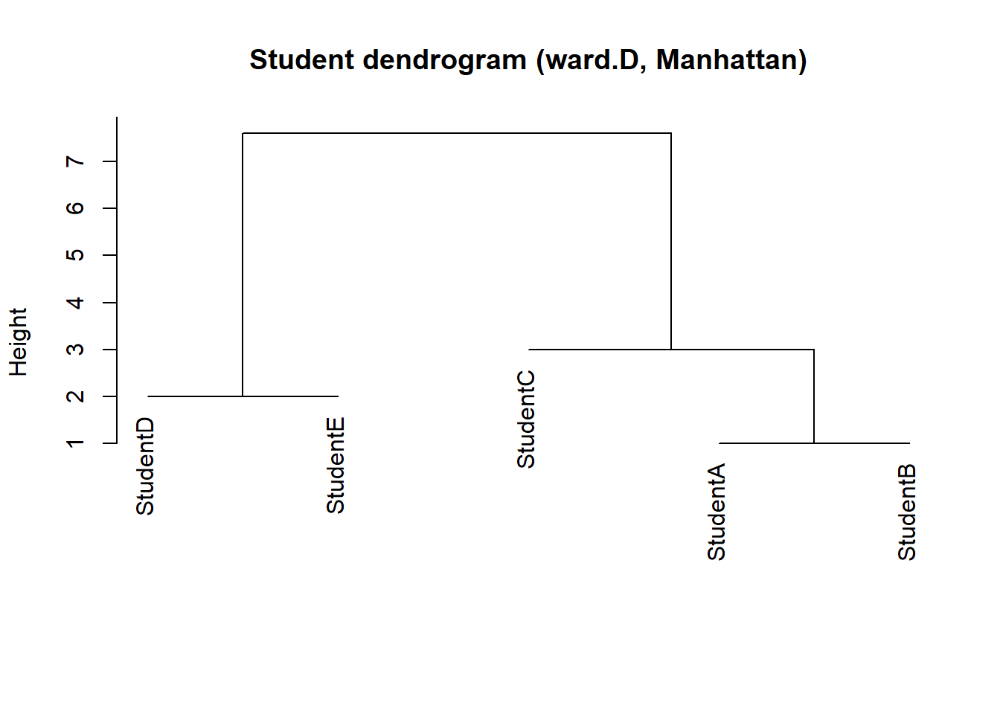
Linkage Methods
The linkage method determines how the distance between a new merged cluster and remaining clusters is computed. This choice can substantially change the shape of the dendrogram:
Method | Description | Best for |
|---|---|---|
ward.D2 ✓ | Minimises total within-cluster variance — corrected Ward criterion | Most linguistic data — compact, well-separated clusters (default) |
complete | Distance = maximum pairwise distance between the two clusters | When clusters should have similar diameters |
average (UPGMA) | Distance = average of all pairwise distances (unweighted) | Phylogenetics and genealogical classification |
single | Distance = minimum pairwise distance — prone to chaining | Detecting elongated or chain-like structures (avoid otherwise) |
centroid | Distance between cluster centroids (means) | When cluster shape matters less than position |
median | Distance between cluster medians | Robust to outliers |
mcquitty | McQuitty's weighted average (WPGMA) | Balanced cluster sizes |
Choosing a Linkage Method
ward.D2 is the recommended default for most linguistic datasets because it produces compact, well-separated clusters. ward.D2 is the corrected version of ward.D (uses squared distances consistently) and should be preferred in new analyses. Use average linkage for phylogenetic-style analyses — it is equivalent to the UPGMA algorithm widely used in historical linguistics. Avoid single linkage unless you expect chained structures — it tends to produce one long chain rather than distinct groups.
Dataset 1: Varieties of English
Generating the Data
Code
set.seed(2026)
IrishEnglish <- round(sqrt((rnorm(10, 9.5, .5))^2), 3)
ScottishEnglish <- round(sqrt((rnorm(10, 9.3, .4))^2), 3)
BritishEnglish <- round(sqrt((rnorm(10, 6.4, .7))^2), 3)
AustralianEnglish <- round(sqrt((rnorm(10, 6.6, .5))^2), 3)
NewZealandEnglish <- round(sqrt((rnorm(10, 6.5, .4))^2), 3)
AmericanEnglish <- round(sqrt((rnorm(10, 4.6, .8))^2), 3)
CanadianEnglish <- round(sqrt((rnorm(10, 4.5, .7))^2), 3)
JamaicanEnglish <- round(sqrt((rnorm(10, 1.4, .2))^2), 3)
PhilippineEnglish <- round(sqrt((rnorm(10, 1.5, .4))^2), 3)
IndianEnglish <- round(sqrt((rnorm(10, 1.3, .5))^2), 3)
clus <- data.frame(
IrishEnglish, ScottishEnglish, BritishEnglish,
AustralianEnglish, NewZealandEnglish, AmericanEnglish,
CanadianEnglish, JamaicanEnglish, PhilippineEnglish, IndianEnglish,
row.names = c("nae_neg","like","clefts","tags","youse",
"soitwas","dt","nsr","invartag","wh_cleft")
)Feature | IrishEnglish | ScottishEnglish | BritishEnglish | AustralianEnglish | NewZealandEnglish | AmericanEnglish | CanadianEnglish | JamaicanEnglish | PhilippineEnglish | IndianEnglish |
|---|---|---|---|---|---|---|---|---|---|---|
nae_neg | 9.760 | 9.137 | 6.170 | 6.336 | 6.037 | 3.664 | 4.401 | 1.504 | 1.038 | 0.321 |
like | 8.960 | 9.008 | 6.285 | 6.683 | 6.811 | 4.435 | 4.617 | 1.401 | 2.104 | 2.037 |
clefts | 9.570 | 9.211 | 5.426 | 6.473 | 6.018 | 3.856 | 4.361 | 1.669 | 1.038 | 1.063 |
tags | 9.458 | 9.210 | 7.426 | 6.766 | 6.623 | 4.960 | 4.296 | 1.231 | 0.877 | 1.791 |
youse | 9.167 | 8.281 | 6.434 | 6.691 | 6.167 | 4.084 | 3.286 | 1.489 | 1.478 | 0.388 |
soitwas | 8.242 | 9.839 | 7.736 | 7.182 | 7.067 | 4.415 | 4.309 | 1.205 | 1.840 | 1.170 |
dt | 9.132 | 9.547 | 7.612 | 6.897 | 6.785 | 3.611 | 3.240 | 1.825 | 1.496 | 0.821 |
nsr | 8.990 | 9.387 | 6.441 | 6.154 | 6.339 | 3.831 | 5.307 | 1.538 | 1.196 | 1.055 |
invartag | 9.557 | 8.978 | 6.852 | 6.889 | 6.820 | 4.707 | 3.798 | 1.331 | 1.970 | 0.761 |
wh_cleft | 9.263 | 9.576 | 7.608 | 6.188 | 6.671 | 3.801 | 4.604 | 1.557 | 2.466 | 1.485 |
Preparing the Data
Code
clust <- t(clus) # varieties as rows
clust <- na.omit(clust)
clusts <- scale(clust) # standardise features
cat("Matrix dimensions:", nrow(clusts), "varieties ×", ncol(clusts), "features\n")Matrix dimensions: 10 varieties × 10 featuresHopkins Statistic
Code
set.seed(2026)
clust_tend <- factoextra::get_clust_tendency(
clusts, n = nrow(clusts) - 1,
gradient = list(low = "steelblue", high = "white")
)
cat("Hopkins statistic:", round(clust_tend$hopkins_stat, 3), "\n")Hopkins statistic: 0.809 Code
cat("Interpretation:",
ifelse(clust_tend$hopkins_stat > 0.7, "Data is well-clusterable (H > 0.7)",
ifelse(clust_tend$hopkins_stat > 0.5, "Some structure present (H > 0.5)",
"Data appears random — clustering may not be meaningful")), "\n")Interpretation: Data is well-clusterable (H > 0.7) Distance Matrix and Dissimilarity Plot
Code
clustd <- dist(clusts, method = "euclidean")
# Dissimilarity plot
seriation::dissplot(clustd, main = "Dissimilarity plot: 10 English varieties")
Distinct dark blocks along the diagonal confirm genuine cluster structure in the data.
Fitting and Comparing Linkage Methods
Code
par(mfrow = c(2, 2), mar = c(2, 2, 3, 1))
for (m in c("ward.D2", "complete", "average", "single")) {
plot(hclust(clustd, method = m), hang = -1, cex = 0.7,
main = paste("Linkage:", m), xlab = "", sub = "")
}
Code
par(mfrow = c(1, 1), mar = c(5.1, 4.1, 4.1, 2.1))Cophenetic Correlation
The cophenetic correlation measures how well the dendrogram preserves the original pairwise distances:
Code
link_methods <- c("ward.D2","complete","average","single","mcquitty")
coph_vals <- sapply(link_methods, function(m) {
hc <- hclust(clustd, method = m)
cor(clustd, cophenetic(hc))
})
data.frame(Linkage = link_methods, Cophenetic = round(coph_vals, 3)) |>
dplyr::arrange(desc(Cophenetic)) |>
flextable() |>
flextable::set_table_properties(width = .4, layout = "autofit") |>
flextable::theme_zebra() |>
flextable::bold(i = 1) |>
flextable::set_caption("Cophenetic correlation by linkage (higher = better)")Linkage | Cophenetic |
|---|---|
average | 0.781 |
mcquitty | 0.780 |
complete | 0.777 |
ward.D2 | 0.775 |
single | 0.689 |
Code
# Fit final model with ward.D2
cd <- hclust(clustd, method = "ward.D2")
plot(cd, hang = -1, cex = 0.9,
main = "Hierarchical clustering: 10 English varieties (ward.D2)",
xlab = "", sub = "")
How to Read a Dendrogram
- Leaves (bottom) = individual objects (here: varieties)
- Branch height = distance at which the merge occurred — lower = more similar
- Clusters = everything below a horizontal cut line in the same subtree
- The left-right order of leaves is arbitrary and can be permuted without changing the dendrogram’s meaning; only the vertical heights matter
- Look for large vertical gaps between successive merges — these mark natural cluster boundaries
Dataset 2: Early Modern English Text Types
For a second worked example, we cluster 8 Early Modern English text types based on 12 grammatical features that are known to vary by genre/register (Biber 1995). This illustrates how the same workflow applies to a different linguistic domain.
Code
set.seed(2026)
# 8 EME text types × 12 grammatical features (simulated rates per 1000 words)
# Features: past tense, perfect aspect, passives, nominalisation,
# present tense, first-person pronouns, private verbs,
# questions, imperatives, hedges, subordination, coordination
eme_data <- data.frame(
PastTense = c(42, 38, 18, 12, 8, 10, 25, 30),
PerfectAsp = c( 8, 6, 4, 3, 2, 2, 5, 4),
Passives = c( 5, 4, 22, 18, 3, 4, 6, 8),
Nominalis = c(12, 10, 35, 28, 4, 5, 15, 18),
PreseTense = c(15, 18, 25, 30, 45, 40, 20, 15),
FirstPron = c(18, 20, 4, 3, 35, 30, 10, 8),
PrivVerbs = c(22, 24, 6, 5, 38, 32, 14, 10),
Questions = c( 6, 8, 1, 1, 18, 15, 4, 3),
Imperatives = c( 2, 3, 1, 1, 10, 9, 3, 2),
Hedges = c( 8, 9, 4, 3, 20, 18, 6, 5),
Subordinat = c(20, 18, 28, 25, 15, 16, 22, 24),
Coordinat = c(15, 16, 10, 9, 12, 14, 18, 20),
row.names = c("Sermons","Trials","ScientificProse","LegalDocs",
"PersonalLetters","Diaries","NarrativeProse","Chronicles")
)
eme_data |> tibble::rownames_to_column("TextType") |>
flextable() |>
flextable::set_table_properties(width = 1, layout = "autofit") |>
flextable::theme_zebra() |> flextable::fontsize(size = 9) |>
flextable::set_caption("Grammatical feature rates (per 1,000 words): Early Modern English text types")TextType | PastTense | PerfectAsp | Passives | Nominalis | PreseTense | FirstPron | PrivVerbs | Questions | Imperatives | Hedges | Subordinat | Coordinat |
|---|---|---|---|---|---|---|---|---|---|---|---|---|
Sermons | 42 | 8 | 5 | 12 | 15 | 18 | 22 | 6 | 2 | 8 | 20 | 15 |
Trials | 38 | 6 | 4 | 10 | 18 | 20 | 24 | 8 | 3 | 9 | 18 | 16 |
ScientificProse | 18 | 4 | 22 | 35 | 25 | 4 | 6 | 1 | 1 | 4 | 28 | 10 |
LegalDocs | 12 | 3 | 18 | 28 | 30 | 3 | 5 | 1 | 1 | 3 | 25 | 9 |
PersonalLetters | 8 | 2 | 3 | 4 | 45 | 35 | 38 | 18 | 10 | 20 | 15 | 12 |
Diaries | 10 | 2 | 4 | 5 | 40 | 30 | 32 | 15 | 9 | 18 | 16 | 14 |
NarrativeProse | 25 | 5 | 6 | 15 | 20 | 10 | 14 | 4 | 3 | 6 | 22 | 18 |
Chronicles | 30 | 4 | 8 | 18 | 15 | 8 | 10 | 3 | 2 | 5 | 24 | 20 |
Code
# Standardise and compute distance
eme_sc <- scale(eme_data)
eme_dist <- dist(eme_sc, method = "euclidean")
# Hopkins statistic
set.seed(2026)
eme_tend <- factoextra::get_clust_tendency(eme_sc, n = 6,
gradient = list(low = "steelblue", high = "white"))
cat("Hopkins (EME data):", round(eme_tend$hopkins_stat, 3), "\n")Hopkins (EME data): 0.745 Code
# Fit with ward.D2
cd_eme <- hclust(eme_dist, method = "ward.D2")
plot(cd_eme, hang = -1, cex = 0.9,
main = "Early Modern English text types (ward.D2, Euclidean)",
xlab = "", sub = "")
The dendrogram reveals a broad grouping between formal/written registers (Scientific Prose, Legal Docs, Sermons, Trials) and informal/speech-related text types (Personal Letters, Diaries) with narrative texts forming a middle ground.
Exercise: Linkage Methods
Q2. A hierarchical cluster analysis of 12 dialect varieties produces dendrograms with cophenetic correlations: ward.D2 = 0.71, complete = 0.78, average = 0.84, single = 0.62. A colleague says you must use average linkage because it has the highest cophenetic correlation. Should you follow this advice?
Choosing the Number of Clusters
Section Overview
What you will learn: Three complementary approaches to deciding how many clusters to extract — the silhouette criterion, the elbow method, and the gap statistic — and how to apply them to both the English varieties and EME text-type datasets
The Silhouette Width Criterion
The silhouette width measures how well each object fits its assigned cluster relative to the nearest alternative cluster. For object \(i\) in cluster \(C_i\):
\[s(i) = \frac{b(i) - a(i)}{\max(a(i),\; b(i))}\]
- \(a(i)\) = average distance from \(i\) to all other objects in its own cluster (cohesion)
- \(b(i)\) = average distance from \(i\) to all objects in the nearest other cluster (separation)
- \(s(i) \in [-1, +1]\): values close to +1 = well-clustered; close to 0 = borderline; negative = possibly misassigned
Average silhouette width across all objects provides a single summary of the cluster solution. Levshina (2015, 311) recommends that values below .20 indicate clustering is inappropriate.
Code
# Silhouette criterion: English varieties
sil_eng <- sapply(2:(nrow(clusts)-1), function(k) {
grps <- cutree(cd, k = k)
summary(silhouette(grps, clustd))$avg.width
})
# Silhouette criterion: EME text types
sil_eme <- sapply(2:(nrow(eme_sc)-1), function(k) {
grps <- cutree(cd_eme, k = k)
summary(silhouette(grps, eme_dist))$avg.width
})
# Combined plot
tibble::tibble(
k = c(2:(nrow(clusts)-1), 2:(nrow(eme_sc)-1)),
Silhouette = c(sil_eng, sil_eme),
Dataset = c(rep("English varieties", length(sil_eng)),
rep("EME text types", length(sil_eme)))
) |>
ggplot(aes(x = k, y = Silhouette, color = Dataset, group = Dataset)) +
geom_line(linewidth = 1) +
geom_point(size = 2.5) +
geom_hline(yintercept = 0.20, linetype = "dashed", color = "grey50") +
facet_wrap(~ Dataset, scales = "free_x") +
scale_color_manual(values = c("English varieties" = "steelblue",
"EME text types" = "firebrick")) +
theme_bw() +
theme(legend.position = "none") +
labs(title = "Average silhouette width by number of clusters",
subtitle = "Dashed line = minimum acceptable threshold (0.20)",
x = "Number of clusters (k)", y = "Average silhouette width")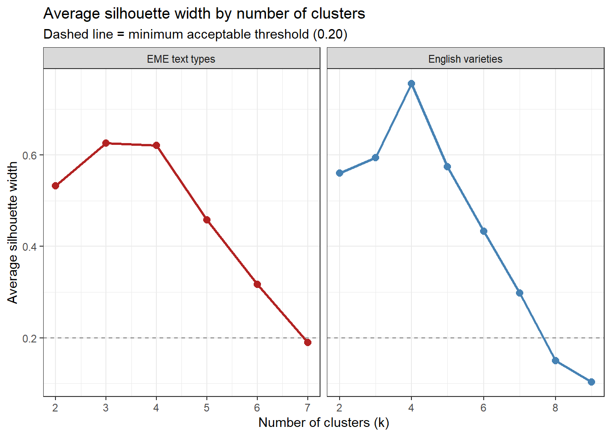
Code
opt_k_eng <- which.max(sil_eng) + 1
opt_k_eme <- which.max(sil_eme) + 1
cat("Optimal k (English varieties):", opt_k_eng,
"| silhouette:", round(max(sil_eng), 3), "\n")Optimal k (English varieties): 4 | silhouette: 0.756 Code
cat("Optimal k (EME text types):", opt_k_eme,
"| silhouette:", round(max(sil_eme), 3), "\n")Optimal k (EME text types): 3 | silhouette: 0.626 The Elbow Method
The elbow method plots the total within-cluster sum of squares (WSS) against k. The “elbow” — where the rate of decrease in WSS flattens — suggests a natural choice:
Code
# Elbow method: manual WSS calculation (avoids fviz_nbclust/hcut bug on square matrices)
wss_eng <- sapply(1:(nrow(clusts) - 1), function(k) {
grps <- cutree(cd, k = k)
sum(sapply(unique(grps), function(g) {
members <- clusts[grps == g, , drop = FALSE]
if (nrow(members) == 1) return(0)
sum(apply(members, 2, var) * (nrow(members) - 1))
}))
})
wss_eme <- sapply(1:(nrow(eme_sc) - 1), function(k) {
grps <- cutree(cd_eme, k = k)
sum(sapply(unique(grps), function(g) {
members <- eme_sc[grps == g, , drop = FALSE]
if (nrow(members) == 1) return(0)
sum(apply(members, 2, var) * (nrow(members) - 1))
}))
})
p1 <- data.frame(k = 1:(nrow(clusts) - 1), wss = wss_eng) |>
ggplot(aes(x = k, y = wss)) +
geom_line(color = "steelblue", linewidth = 1) +
geom_point(color = "steelblue", size = 2.5) +
theme_bw() +
labs(title = "Elbow: English varieties",
x = "Number of clusters (k)", y = "Total within-cluster SS")
p2 <- data.frame(k = 1:(nrow(eme_sc) - 1), wss = wss_eme) |>
ggplot(aes(x = k, y = wss)) +
geom_line(color = "firebrick", linewidth = 1) +
geom_point(color = "firebrick", size = 2.5) +
theme_bw() +
labs(title = "Elbow: EME text types",
x = "Number of clusters (k)", y = "Total within-cluster SS")
gridExtra::grid.arrange(p1, p2, ncol = 2)
Gap Statistic
The gap statistic compares the observed WSS to the WSS expected from a reference null distribution (randomly sampled data). The optimal k is the smallest k where the gap is within 1 SE of the maximum:
Code
set.seed(2026)
gap_eng <- cluster::clusGap(
clusts,
FUNcluster = function(x, k) list(cluster = cutree(hclust(dist(x), "ward.D2"), k)),
K.max = nrow(clusts) - 1,
B = 200
)
gap_eme <- cluster::clusGap(
eme_sc,
FUNcluster = function(x, k) list(cluster = cutree(hclust(dist(x), "ward.D2"), k)),
K.max = nrow(eme_sc) - 1,
B = 200
)
p_gap1 <- factoextra::fviz_gap_stat(gap_eng) +
theme_bw() + labs(title = "Gap statistic: English varieties")
p_gap2 <- factoextra::fviz_gap_stat(gap_eme) +
theme_bw() + labs(title = "Gap statistic: EME text types")
gridExtra::grid.arrange(p_gap1, p_gap2, ncol = 2)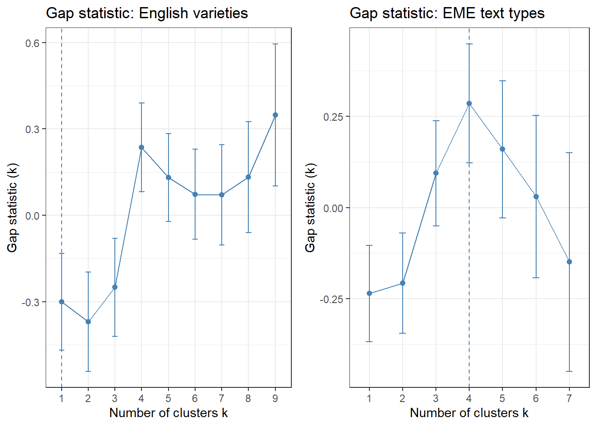
Visualising the Optimal Solutions
Code
groups_eng <- cutree(cd, k = opt_k_eng)
# Dendrogram with borders
plot(cd, hang = -1, cex = 0.85,
main = paste("English varieties: k =", opt_k_eng), xlab = "", sub = "")
rect.hclust(cd, k = opt_k_eng,
border = c("firebrick","steelblue","darkgreen","purple")[1:opt_k_eng])
Code
# Silhouette plot
sil_opt_eng <- silhouette(groups_eng, clustd)
plot(sil_opt_eng,
col = c("firebrick","steelblue","darkgreen","purple")[1:opt_k_eng],
main = paste("Silhouette plot: English varieties (k =", opt_k_eng, ")"))
Code
groups_eme <- cutree(cd_eme, k = opt_k_eme)
plot(cd_eme, hang = -1, cex = 0.85,
main = paste("EME text types: k =", opt_k_eme), xlab = "", sub = "")
rect.hclust(cd_eme, k = opt_k_eme,
border = c("firebrick","steelblue","darkgreen")[1:opt_k_eme])
Code
sil_opt_eme <- silhouette(groups_eme, eme_dist)
plot(sil_opt_eme,
col = c("firebrick","steelblue","darkgreen")[1:opt_k_eme],
main = paste("Silhouette plot: EME text types (k =", opt_k_eme, ")"))
Code
# Membership summary for both datasets
rbind(
data.frame(Dataset = "English varieties",
Object = names(groups_eng),
Cluster = paste0("Cluster ", groups_eng)),
data.frame(Dataset = "EME text types",
Object = names(groups_eme),
Cluster = paste0("Cluster ", groups_eme))
) |>
dplyr::arrange(Dataset, Cluster) |>
flextable() |>
flextable::set_table_properties(width = .65, layout = "autofit") |>
flextable::theme_zebra() |>
flextable::set_caption("Cluster membership: both datasets")Dataset | Object | Cluster |
|---|---|---|
EME text types | Sermons | Cluster 1 |
EME text types | Trials | Cluster 1 |
EME text types | NarrativeProse | Cluster 1 |
EME text types | Chronicles | Cluster 1 |
EME text types | ScientificProse | Cluster 2 |
EME text types | LegalDocs | Cluster 2 |
EME text types | PersonalLetters | Cluster 3 |
EME text types | Diaries | Cluster 3 |
English varieties | IrishEnglish | Cluster 1 |
English varieties | ScottishEnglish | Cluster 1 |
English varieties | BritishEnglish | Cluster 2 |
English varieties | AustralianEnglish | Cluster 2 |
English varieties | NewZealandEnglish | Cluster 2 |
English varieties | AmericanEnglish | Cluster 3 |
English varieties | CanadianEnglish | Cluster 3 |
English varieties | JamaicanEnglish | Cluster 4 |
English varieties | PhilippineEnglish | Cluster 4 |
English varieties | IndianEnglish | Cluster 4 |
Exercise: Choosing the Number of Clusters
Q3. For the English varieties data, the silhouette criterion suggests k=3 (avg silhouette = 0.48), while the elbow method is ambiguous between k=2 and k=3, and the gap statistic favours k=2. How should the researcher proceed?
Cluster Validation
Section Overview
What you will learn: Why cluster solutions need external validation beyond internal metrics; how bootstrap resampling with pvclust provides approximately unbiased p-values for dendrogram branches; how to interpret AU and BP values; and how to visualise validated clusters with ape
Why Bootstrap Validation?
Internal criteria (silhouette, Hopkins) assess how well the algorithm has organised the current data. They do not tell you whether the clusters would replicate in a new sample — a critical question for any linguistic generalisation. Bootstrap validation answers this by repeatedly resampling the data and asking: how consistently does each dendrogram branch appear?
pvclust: AU and BP Values
pvclust computes two values per branch:
- AU (Approximately Unbiased p-value): Multi-scale bootstrap estimate corrected for sampling bias. Branches with AU ≥ 95 are statistically supported.
- BP (Bootstrap Probability): Simple proportion of replicates containing the branch — biased for small samples; use AU in preference.
Code
set.seed(2026)
pv_eng <- pvclust::pvclust(
clus, method.dist = "euclidean", method.hclust = "ward.D2",
nboot = 1000, quiet = TRUE
)
plot(pv_eng, cex = 0.85,
main = "Bootstrap validation: English varieties (1000 replicates)")
pvclust::pvrect(pv_eng, alpha = 0.95)
Code
set.seed(2026)
pv_eme <- pvclust::pvclust(
t(eme_data), method.dist = "euclidean", method.hclust = "ward.D2",
nboot = 1000, quiet = TRUE
)
plot(pv_eme, cex = 0.85,
main = "Bootstrap validation: EME text types (1000 replicates)")
pvclust::pvrect(pv_eme, alpha = 0.95)
Code
cat("=== English varieties: branches with AU >= 95 ===\n")=== English varieties: branches with AU >= 95 ===Code
pvclust::pvpick(pv_eng, alpha = 0.95)$clusters
$clusters[[1]]
[1] "IrishEnglish" "ScottishEnglish"
$clusters[[2]]
[1] "BritishEnglish" "AustralianEnglish" "NewZealandEnglish"
$clusters[[3]]
[1] "AmericanEnglish" "CanadianEnglish"
$clusters[[4]]
[1] "JamaicanEnglish" "PhilippineEnglish" "IndianEnglish"
$edges
[1] 3 4 5 6Code
cat("\n=== EME text types: branches with AU >= 95 ===\n")
=== EME text types: branches with AU >= 95 ===Code
pvclust::pvpick(pv_eme, alpha = 0.95)$clusters
$clusters[[1]]
[1] "PersonalLetters" "Diaries"
$clusters[[2]]
[1] "Sermons" "Trials" "ScientificProse" "LegalDocs"
[5] "NarrativeProse" "Chronicles"
$edges
[1] 3 6
Reporting Bootstrap Validation
In a published linguistic study, report bootstrap results as follows:
- List branches that are statistically supported (AU ≥ 95) and those that are not
- Interpret AU < 80 branches as unstable — do not over-interpret the membership of varieties in these groups
- Note the number of bootstrap replicates used (standard minimum: 1000)
- Example: “The Celtic cluster (Irish + Scottish English) was strongly supported (AU = 98), confirming the robustness of this grouping. The split between Australian and New Zealand English had only moderate support (AU = 72) and should be interpreted cautiously.”
Publication-Quality Dendrograms with ape
Code
par(mfrow = c(1, 2))
# Rectangular phylo dendrogram
plot(ape::as.phylo(cd), cex = 0.8, label.offset = 0.3,
main = "Rectangular (ape)")
# Fan dendrogram — useful when many leaves
plot(ape::as.phylo(cd), type = "fan", cex = 0.8,
main = "Fan (ape)")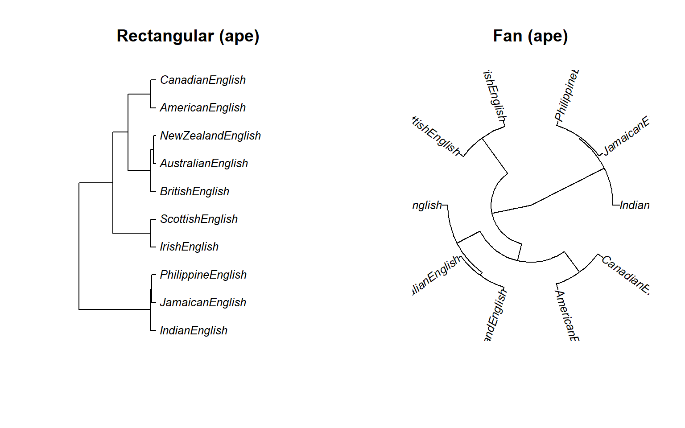
Code
par(mfrow = c(1, 1))Code
# Unrooted tree for EME data
plot(ape::as.phylo(cd_eme), type = "unrooted", cex = 0.85,
label.offset = 0.5,
main = "EME text types: unrooted dendrogram")
Identifying Distinctive Features
Section Overview
What you will learn: How to identify which features most distinguish one cluster from others; how to visualise feature importance as a sorted barplot; and how to test the statistical significance of feature differences between clusters using Fisher’s exact test
Mean Feature Differences
After identifying clusters, the natural next question is: what makes each cluster distinctive? Comparing mean feature values between clusters — on the standardised scale — reveals which features drive the separation.
English Varieties: Celtic vs. Non-Celtic
Code
celtic <- clusts[c("IrishEnglish","ScottishEnglish"), ]
others <- clusts[!rownames(clusts) %in% c("IrishEnglish","ScottishEnglish"), ]
diff_celtic <- colMeans(celtic) - colMeans(others)
data.frame(
Feature = names(sort(diff_celtic)),
Difference = round(sort(diff_celtic), 3),
Direction = ifelse(sort(diff_celtic) > 0, "More Celtic", "More non-Celtic")
) |>
flextable() |>
flextable::set_table_properties(width = .55, layout = "autofit") |>
flextable::theme_zebra() |>
flextable::color(i = ~ Direction == "More Celtic", color = "steelblue") |>
flextable::color(i = ~ Direction == "More non-Celtic", color = "firebrick") |>
flextable::set_caption("Feature differences: Celtic vs. non-Celtic (standardised)")Feature | Difference | Direction |
|---|---|---|
soitwas | 1.483 | More Celtic |
tags | 1.604 | More Celtic |
dt | 1.623 | More Celtic |
youse | 1.632 | More Celtic |
invartag | 1.632 | More Celtic |
like | 1.686 | More Celtic |
wh_cleft | 1.704 | More Celtic |
nsr | 1.706 | More Celtic |
nae_neg | 1.768 | More Celtic |
clefts | 1.830 | More Celtic |
Code
data.frame(Feature = names(sort(diff_celtic)), Diff = sort(diff_celtic)) |>
ggplot(aes(x = Diff,
y = reorder(Feature, Diff),
fill = ifelse(Diff > 0, "More Celtic", "More non-Celtic"))) +
geom_col(color = "white") +
geom_vline(xintercept = 0, linetype = "dashed", color = "grey40") +
scale_fill_manual(values = c("More Celtic" = "steelblue",
"More non-Celtic" = "firebrick")) +
theme_bw() + theme(legend.position = "top") +
labs(title = "Features distinguishing Celtic from non-Celtic varieties",
x = "Mean difference (standardised: Celtic − non-Celtic)",
y = NULL, fill = NULL)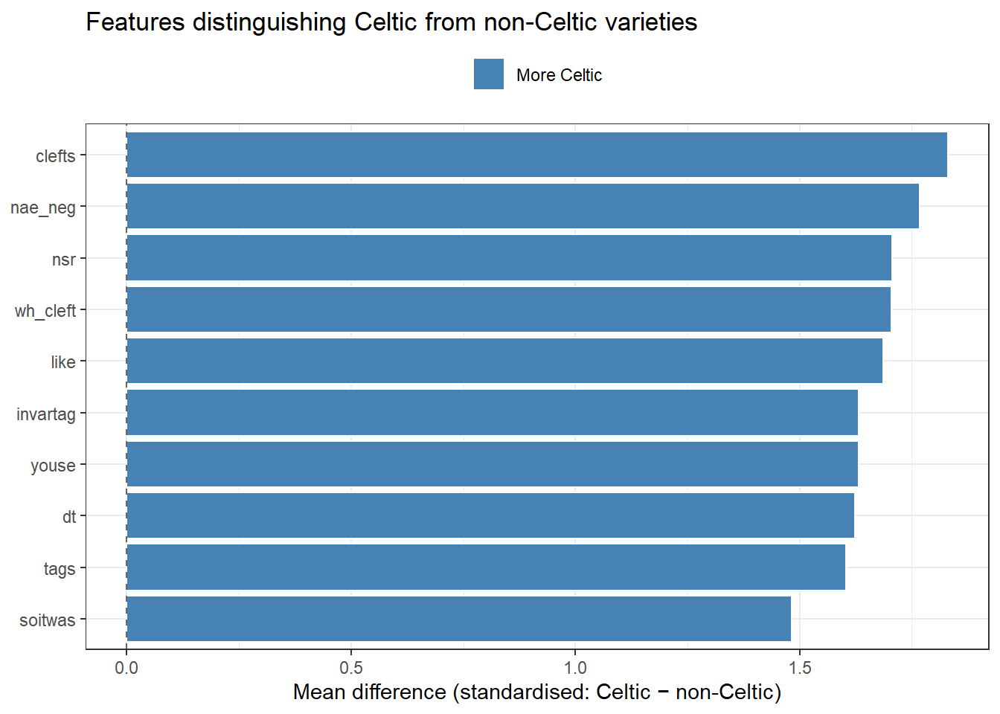
EME Text Types: Formal vs. Informal
Code
# Identify formal (Scientific + Legal) vs informal (Letters + Diaries) clusters
formal <- eme_sc[c("ScientificProse","LegalDocs"), ]
informal <- eme_sc[c("PersonalLetters","Diaries"), ]
diff_eme <- colMeans(formal) - colMeans(informal)
data.frame(
Feature = names(sort(diff_eme)),
Difference = round(sort(diff_eme), 3),
Direction = ifelse(sort(diff_eme) > 0, "More formal", "More informal")
) |>
flextable() |>
flextable::set_table_properties(width = .55, layout = "autofit") |>
flextable::theme_zebra() |>
flextable::color(i = ~ Direction == "More formal", color = "steelblue") |>
flextable::color(i = ~ Direction == "More informal", color = "firebrick") |>
flextable::set_caption("Feature differences: formal vs. informal EME text types (standardised)")Feature | Difference | Direction |
|---|---|---|
FirstPron | -2.439 | More informal |
Questions | -2.433 | More informal |
PrivVerbs | -2.426 | More informal |
Hedges | -2.413 | More informal |
Imperatives | -2.385 | More informal |
PreseTense | -1.311 | More informal |
Coordinat | -0.919 | More informal |
PastTense | 0.462 | More formal |
PerfectAsp | 0.731 | More formal |
Passives | 2.296 | More formal |
Subordinat | 2.409 | More formal |
Nominalis | 2.484 | More formal |
Code
data.frame(Feature = names(sort(diff_eme)), Diff = sort(diff_eme)) |>
ggplot(aes(x = Diff,
y = reorder(Feature, Diff),
fill = ifelse(Diff > 0, "More formal", "More informal"))) +
geom_col(color = "white") +
geom_vline(xintercept = 0, linetype = "dashed", color = "grey40") +
scale_fill_manual(values = c("More formal" = "steelblue",
"More informal" = "firebrick")) +
theme_bw() + theme(legend.position = "top") +
labs(title = "Features distinguishing formal from informal EME text types",
x = "Mean difference (standardised: formal − informal)",
y = NULL, fill = NULL)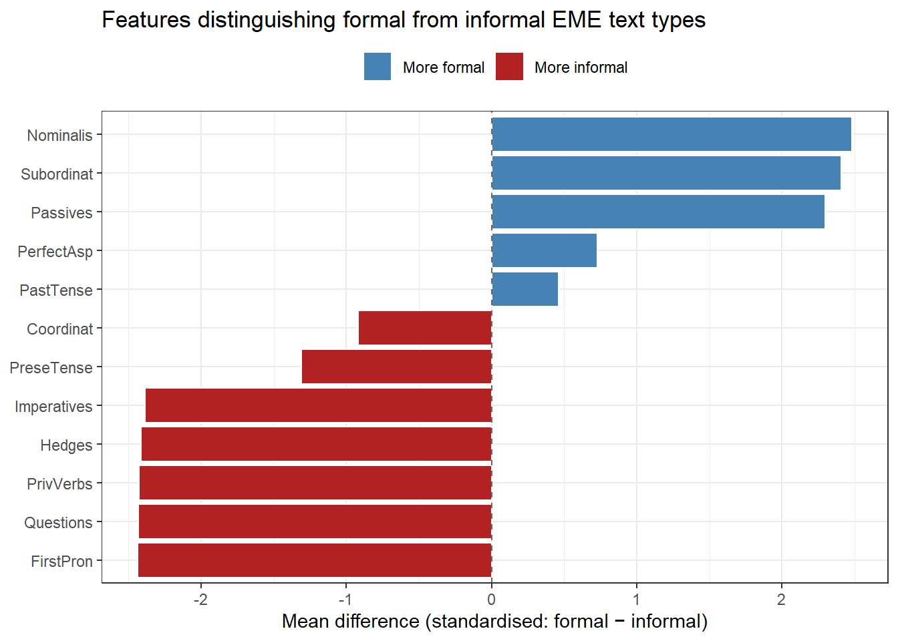
Nominalisation and passives are strongly associated with formal written registers, while first-person pronouns, private verbs, and imperatives characterise informal personal writing — a pattern consistent with Biber’s Dimension 1 (Involved vs. Informational Production) (Biber 1995).
Fisher’s Exact Test for Nominal Features
For binary presence/absence data we can test statistically which features most strongly distinguish clusters:
Code
# Binary data for varieties
clus_bin_names <- c("nae_neg","like","clefts","tags","youse",
"soitwas","dt","nsr","invartag","wh_cleft")
clus_bin <- data.frame(
IrishEnglish = c(1,1,1,1,1,1,1,1,1,1),
ScottishEnglish = c(1,1,1,1,1,1,1,1,1,1),
BritishEnglish = c(0,1,1,1,0,0,1,0,1,1),
AustralianEnglish = c(0,1,1,1,0,0,1,0,1,1),
NewZealandEnglish = c(0,1,1,1,0,0,1,0,1,1),
AmericanEnglish = c(0,1,1,1,0,0,0,0,1,0),
CanadianEnglish = c(0,1,1,1,0,0,0,0,1,0),
JamaicanEnglish = c(0,0,1,0,0,0,0,0,1,0),
PhilippineEnglish = c(0,0,1,0,0,0,0,0,1,0),
IndianEnglish = c(0,0,1,0,0,0,0,0,1,0),
row.names = clus_bin_names
)
clusts_bin <- t(as.matrix(clus_bin))
cluster_factor <- as.factor(
ifelse(rownames(clusts_bin) %in% c("IrishEnglish","ScottishEnglish"),
"Celtic", "Other")
)
clus_df <- as.data.frame(clusts_bin)
fisher_res <- lapply(names(clus_df), function(feat) {
tbl <- table(cluster_factor, clus_df[[feat]])
if (all(dim(tbl) == c(2,2))) {
ft <- fisher.test(tbl)
data.frame(Feature = feat,
p_value = round(ft$p.value, 4),
OddsRatio = round(unname(ft$estimate), 2))
} else {
data.frame(Feature = feat, p_value = NA_real_, OddsRatio = NA_real_)
}
}) |>
dplyr::bind_rows() |>
dplyr::arrange(p_value)
fisher_res |>
flextable() |>
flextable::set_table_properties(width = .55, layout = "autofit") |>
flextable::theme_zebra() |>
flextable::color(i = ~ !is.na(p_value) & p_value < .05, color = "steelblue") |>
flextable::bold(i = ~ !is.na(p_value) & p_value < .05) |>
flextable::set_caption("Fisher's exact test: features distinguishing Celtic varieties (blue = p < .05)")Feature | p_value | OddsRatio |
|---|---|---|
nae_neg | 0.0222 | 0 |
youse | 0.0222 | 0 |
soitwas | 0.0222 | 0 |
nsr | 0.0222 | 0 |
dt | 0.4444 | 0 |
wh_cleft | 0.4444 | 0 |
like | 1.0000 | 0 |
tags | 1.0000 | 0 |
clefts | ||
invartag |
Heat Maps
Section Overview
What you will learn: What a clustered heat map is; how to produce one that combines hierarchical clustering on both rows and columns; how to read colour, dendrograms, and block patterns; and how to produce heat maps for both the English varieties and EME datasets
What Is a Clustered Heat Map?
A heat map displays a data matrix as a colour grid: each cell’s colour encodes the value of one variable (feature) for one object (variety/text type). When hierarchical clustering is applied to both rows and columns, the matrix is rearranged so that similar objects and similar features are adjacent — revealing block patterns that are invisible in the raw data table.
Heat maps are particularly effective when: - The dataset has many objects (N > 8) and many features (p > 6) - You want to communicate both cluster structure and which features drive each cluster - You are preparing a figure for publication that needs to stand alone without a separate dendrogram
Heat Map: English Varieties
Code
gplots::heatmap.2(
clusts,
scale = "none",
dendrogram = "both",
trace = "none",
col = colorRampPalette(c("steelblue","white","firebrick"))(100),
margins = c(10, 12),
cexRow = 0.85,
cexCol = 0.85,
main = "Heat map: 10 English varieties × 10 features",
key.title = "",
key.xlab = "z-score",
density.info = "none"
)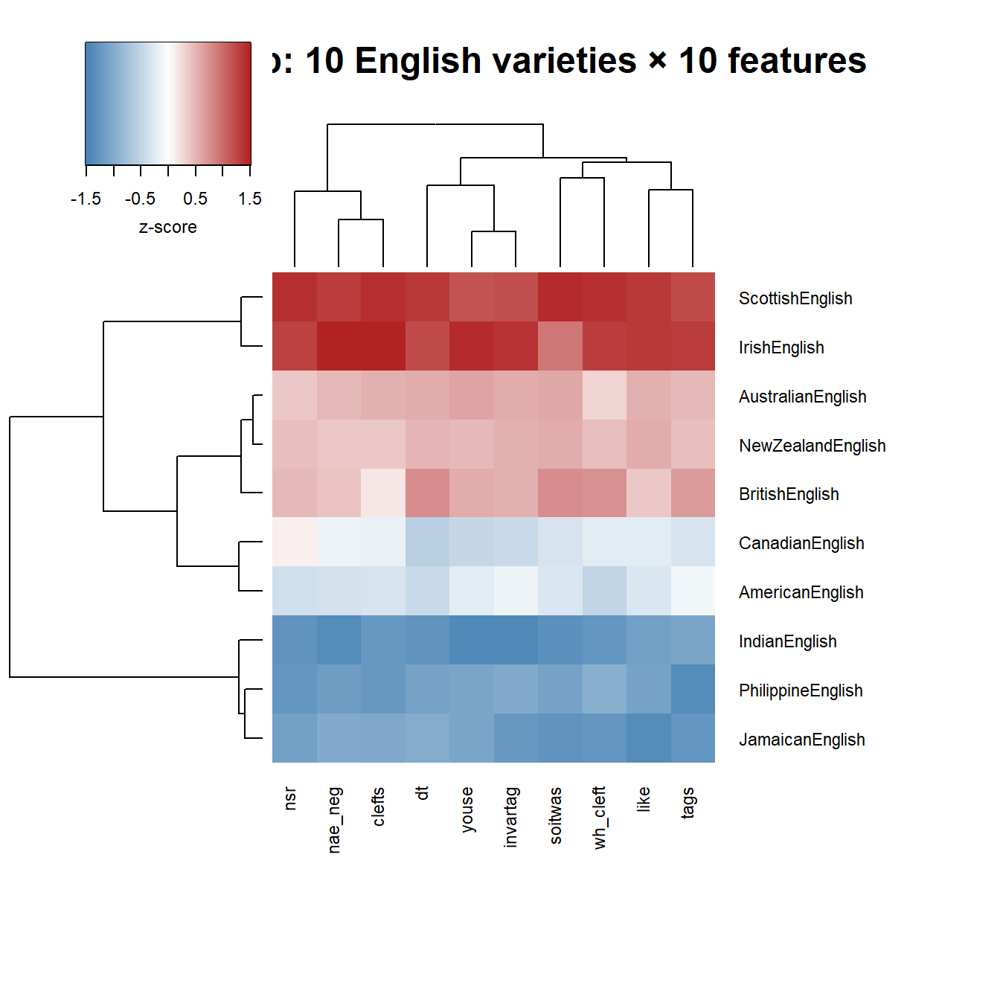
Reading a Clustered Heat Map
- Rows = features; columns = varieties (or vice versa — check axis labels)
- Cell colour: red = feature more frequent than average (high z-score); blue = less frequent; white = average
- Column dendrogram (top): clusters of varieties with similar feature profiles — this is the same hierarchy as our main dendrogram
- Row dendrogram (left): clusters of features that co-vary across varieties — features that are both red (or both blue) in the same varieties cluster together
- Rectangular blocks: a red block in the upper-left means those features are notably high in those varieties — they are diagnostic of that cluster. A blue block means the features are notably absent.
- The colour scale is centred at z = 0 (the grand mean) — white cells are at the average, not at zero frequency
Heat Map: EME Text Types
Code
gplots::heatmap.2(
eme_sc,
scale = "none",
dendrogram = "both",
trace = "none",
col = colorRampPalette(c("steelblue","white","firebrick"))(100),
margins = c(10, 14),
cexRow = 0.80,
cexCol = 0.80,
main = "Heat map: 8 EME text types × 12 grammatical features",
key.title = "",
key.xlab = "z-score",
density.info = "none"
)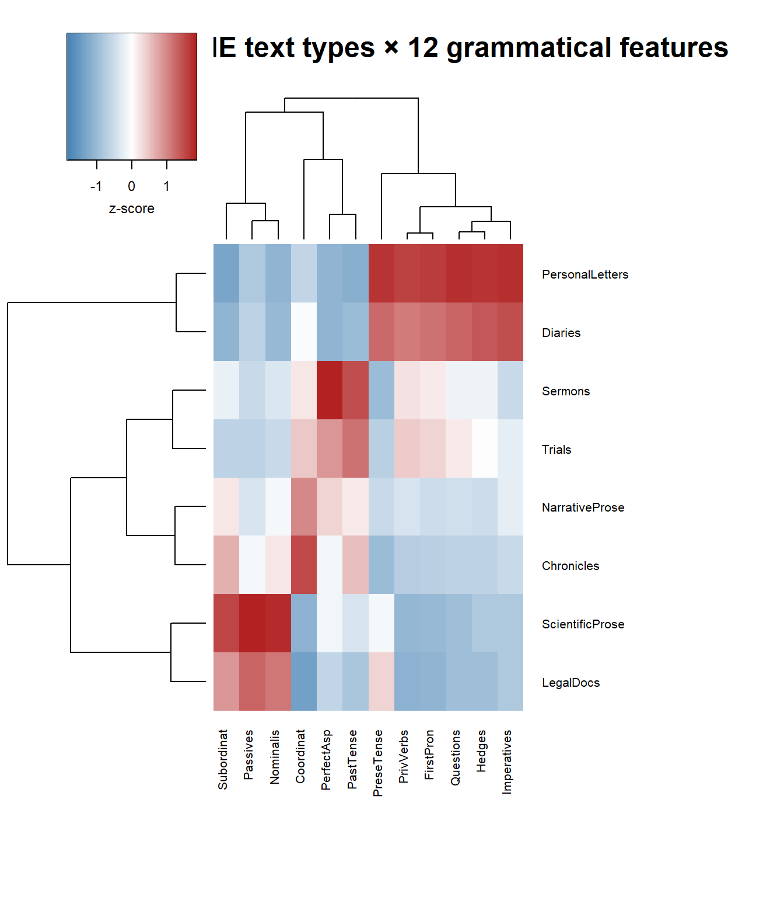
The heat map reveals two major column-clusters (formal and informal registers) and at least two row-clusters: features associated with formal written prose (passives, nominalisation, subordination) appear as a red block in the formal varieties, while features associated with informal spoken-like language (first-person pronouns, private verbs, imperatives) appear as a red block in the informal varieties.
Coloured Dendrogram with factoextra
Code
factoextra::fviz_dend(
cd_eme,
k = opt_k_eme,
color_labels_by_k = TRUE,
rect = TRUE,
rect_fill = TRUE,
ggtheme = theme_bw(),
main = paste("EME text types: coloured dendrogram (k =", opt_k_eme, ")")
)
Exercise: Heat Maps
Q4. In a heat map of 15 dialect varieties × 20 phonological features, one dialect appears as an entirely white column (all cells near white/grey). What does this tell you about that dialect?
Cluster Analysis on Nominal Data
Section Overview
What you will learn: How to cluster objects when data is binary (presence/absence); which distance measure to use and why; how to identify statistically significant distinguishing features; and a worked example using the binary English varieties dataset
Binary Data and the Jaccard Distance
When variables record whether a feature is present (1) or absent (0), the appropriate distance is the binary (Jaccard) distance. It ignores shared absences because in linguistics, two dialects both lacking a rare feature (e.g. neither has stigmatised youse) tells us less about their similarity than if both possess it.
Code
clus_bin |>
as.data.frame() |>
tibble::rownames_to_column("Feature") |>
flextable() |>
flextable::set_table_properties(width = 1, layout = "autofit") |>
flextable::theme_zebra() |> flextable::fontsize(size = 10) |>
flextable::set_caption("Presence (1) / absence (0) of non-standard features")Feature | IrishEnglish | ScottishEnglish | BritishEnglish | AustralianEnglish | NewZealandEnglish | AmericanEnglish | CanadianEnglish | JamaicanEnglish | PhilippineEnglish | IndianEnglish |
|---|---|---|---|---|---|---|---|---|---|---|
nae_neg | 1 | 1 | 0 | 0 | 0 | 0 | 0 | 0 | 0 | 0 |
like | 1 | 1 | 1 | 1 | 1 | 1 | 1 | 0 | 0 | 0 |
clefts | 1 | 1 | 1 | 1 | 1 | 1 | 1 | 1 | 1 | 1 |
tags | 1 | 1 | 1 | 1 | 1 | 1 | 1 | 0 | 0 | 0 |
youse | 1 | 1 | 0 | 0 | 0 | 0 | 0 | 0 | 0 | 0 |
soitwas | 1 | 1 | 0 | 0 | 0 | 0 | 0 | 0 | 0 | 0 |
dt | 1 | 1 | 1 | 1 | 1 | 0 | 0 | 0 | 0 | 0 |
nsr | 1 | 1 | 0 | 0 | 0 | 0 | 0 | 0 | 0 | 0 |
invartag | 1 | 1 | 1 | 1 | 1 | 1 | 1 | 1 | 1 | 1 |
wh_cleft | 1 | 1 | 1 | 1 | 1 | 0 | 0 | 0 | 0 | 0 |
Code
clustd_bin <- dist(t(as.matrix(clus_bin)), method = "binary")
round(as.matrix(clustd_bin), 2) |> as.data.frame() |>
tibble::rownames_to_column("Variety") |>
flextable() |>
flextable::set_table_properties(width = 1, layout = "autofit") |>
flextable::theme_zebra() |> flextable::fontsize(size = 9) |>
flextable::set_caption("Binary (Jaccard) distance matrix")Variety | IrishEnglish | ScottishEnglish | BritishEnglish | AustralianEnglish | NewZealandEnglish | AmericanEnglish | CanadianEnglish | JamaicanEnglish | PhilippineEnglish | IndianEnglish |
|---|---|---|---|---|---|---|---|---|---|---|
IrishEnglish | 0.0 | 0.0 | 0.40 | 0.40 | 0.40 | 0.60 | 0.60 | 0.80 | 0.80 | 0.80 |
ScottishEnglish | 0.0 | 0.0 | 0.40 | 0.40 | 0.40 | 0.60 | 0.60 | 0.80 | 0.80 | 0.80 |
BritishEnglish | 0.4 | 0.4 | 0.00 | 0.00 | 0.00 | 0.33 | 0.33 | 0.67 | 0.67 | 0.67 |
AustralianEnglish | 0.4 | 0.4 | 0.00 | 0.00 | 0.00 | 0.33 | 0.33 | 0.67 | 0.67 | 0.67 |
NewZealandEnglish | 0.4 | 0.4 | 0.00 | 0.00 | 0.00 | 0.33 | 0.33 | 0.67 | 0.67 | 0.67 |
AmericanEnglish | 0.6 | 0.6 | 0.33 | 0.33 | 0.33 | 0.00 | 0.00 | 0.50 | 0.50 | 0.50 |
CanadianEnglish | 0.6 | 0.6 | 0.33 | 0.33 | 0.33 | 0.00 | 0.00 | 0.50 | 0.50 | 0.50 |
JamaicanEnglish | 0.8 | 0.8 | 0.67 | 0.67 | 0.67 | 0.50 | 0.50 | 0.00 | 0.00 | 0.00 |
PhilippineEnglish | 0.8 | 0.8 | 0.67 | 0.67 | 0.67 | 0.50 | 0.50 | 0.00 | 0.00 | 0.00 |
IndianEnglish | 0.8 | 0.8 | 0.67 | 0.67 | 0.67 | 0.50 | 0.50 | 0.00 | 0.00 | 0.00 |
Code
cd_bin <- hclust(clustd_bin, method = "ward.D2")
# Silhouette to choose k
sil_bin <- sapply(2:(nrow(clusts_bin)-1), function(k) {
summary(silhouette(cutree(cd_bin, k=k), clustd_bin))$avg.width
})
opt_k_bin <- which.max(sil_bin) + 1
cat("Optimal k (nominal data):", opt_k_bin, "\n")Optimal k (nominal data): 4 Code
plot(cd_bin, hang = -1, cex = 0.9,
main = "Hierarchical clustering: nominal presence/absence data",
xlab = "", sub = "")
rect.hclust(cd_bin, k = opt_k_bin,
border = c("firebrick","steelblue","darkgreen")[1:opt_k_bin])
Exercise: Nominal Data and Distance Measures
Q5. You cluster 10 English dialects on 20 binary phonological features using Euclidean distance on the 0/1 matrix. Your colleague says Jaccard distance would have been more appropriate. What is the key difference, and does it matter here?
k-Means Clustering
Section Overview
What you will learn: How k-means clustering works and how it differs from hierarchical clustering; how to choose k; how to fit stable k-means models with multiple random starts; how to visualise results with cluster plots and silhouette plots; how to compare k-means and hierarchical solutions; and worked examples on both the English varieties and EME text-type datasets
How k-Means Works
k-means partitions the data into exactly \(k\) non-overlapping groups by minimising the total within-cluster sum of squares (TWSS):
\[\text{TWSS} = \sum_{j=1}^{k} \sum_{x_i \in C_j} \|x_i - \mu_j\|^2\]
where \(\mu_j\) is the centroid (mean vector) of cluster \(j\). The algorithm works iteratively:
- Initialise: Randomly place \(k\) centroids (or use the improved
kmeans++initialisation) - Assign: Each object joins the cluster with the nearest centroid
- Update: Recompute each centroid as the mean of its current members
- Repeat steps 2–3 until assignments do not change (convergence)
Because the algorithm can converge to different local minima depending on the starting configuration, always use nstart > 1 (typically 25) to run multiple random starts and keep the best solution.
Feature | k-Means | Hierarchical |
|---|---|---|
Requires specifying k? | Yes — before fitting | No — decided after fitting |
Output | Flat partition + centroids | Full dendrogram + membership |
Data type requirement | Continuous numeric only | Numeric, binary, or mixed (Gower) |
Scalability | High (millions of rows) | Moderate (< ~1,000 objects) |
Reproducibility | Sensitive to initialisation — use nstart=25 | Deterministic given same data + linkage |
Visualisation | Cluster plot, silhouette | Dendrogram, heat map, ape phylo |
Bootstrap validation? | Not built-in | pvclust |
Detects non-spherical clusters? | No — assumes spherical, equal-size clusters | Yes (especially with single linkage) |
Choosing k for k-Means
Code
p1 <- factoextra::fviz_nbclust(clusts, kmeans, method = "silhouette",
k.max = nrow(clusts) - 1,
nstart = 25) +
theme_bw() + labs(title = "Silhouette: English varieties")
p2 <- factoextra::fviz_nbclust(clusts, kmeans, method = "wss",
k.max = nrow(clusts) - 1,
nstart = 25) +
theme_bw() + labs(title = "Elbow (WSS): English varieties")
gridExtra::grid.arrange(p1, p2, ncol = 2)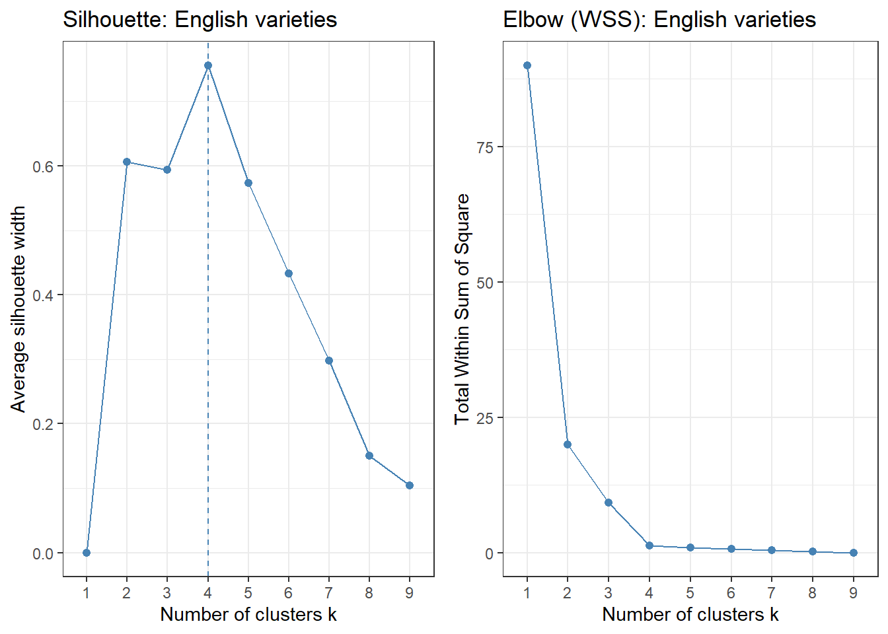
Code
p3 <- factoextra::fviz_nbclust(eme_sc, kmeans, method = "silhouette",
k.max = nrow(eme_sc) - 1,
nstart = 25) +
theme_bw() + labs(title = "Silhouette: EME text types")
p4 <- factoextra::fviz_nbclust(eme_sc, kmeans, method = "wss",
k.max = nrow(eme_sc) - 1,
nstart = 25) +
theme_bw() + labs(title = "Elbow (WSS): EME text types")
gridExtra::grid.arrange(p3, p4, ncol = 2)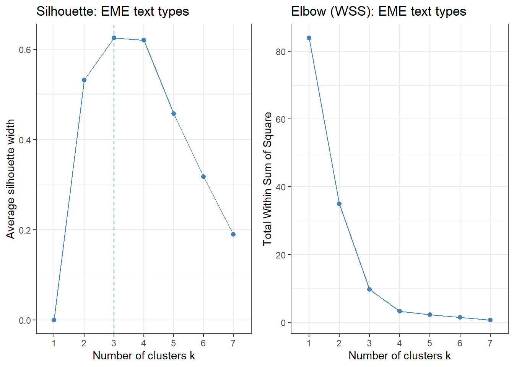
Fitting k-Means: English Varieties
Code
set.seed(2026)
km_eng <- kmeans(clusts,
centers = opt_k_eng,
nstart = 25,
iter.max = 100)
km_engK-means clustering with 4 clusters of sizes 3, 2, 2, 3
Cluster means:
nae_neg like clefts tags youse soitwas dt nsr invartag
1 -1.1907 -1.2183 -1.1695 -1.2498 -1.1908 -1.2359 -1.1371 -1.2322 -1.2139
2 1.4143 1.3490 1.4642 1.2833 1.3055 1.1865 1.2984 1.3645 1.3059
3 -0.2467 -0.2547 -0.2461 -0.2005 -0.3484 -0.2977 -0.5114 -0.1490 -0.2910
4 0.4122 0.4888 0.3574 0.5280 0.5528 0.6433 0.6124 0.4218 0.5373
wh_cleft
1 -1.1598
2 1.3633
3 -0.3724
4 0.4992
Clustering vector:
IrishEnglish ScottishEnglish BritishEnglish AustralianEnglish
2 2 4 4
NewZealandEnglish AmericanEnglish CanadianEnglish JamaicanEnglish
4 3 3 1
PhilippineEnglish IndianEnglish
1 1
Within cluster sum of squares by cluster:
[1] 0.4923 0.2378 0.2988 0.3164
(between_SS / total_SS = 98.5 %)
Available components:
[1] "cluster" "centers" "totss" "withinss" "tot.withinss"
[6] "betweenss" "size" "iter" "ifault" The printed output shows: - Cluster sizes: number of objects per cluster - Cluster means: centroid coordinates on each feature (standardised) - Within-cluster SS: sum of squared distances from objects to their centroid - Between-SS / Total-SS: proportion of total variance captured by the cluster structure — higher = better-separated clusters
Code
# Cluster plot (PCA-projected)
factoextra::fviz_cluster(
km_eng, data = clusts,
palette = c("firebrick","steelblue","darkgreen","purple")[1:opt_k_eng],
geom = "text",
ellipse.type = "convex",
ggtheme = theme_bw(),
main = paste("k-Means cluster plot: English varieties (k =", opt_k_eng, ")")
)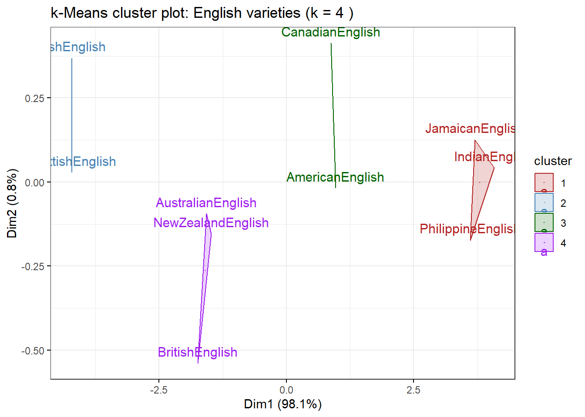
Code
sil_km_eng <- silhouette(km_eng$cluster, clustd)
plot(sil_km_eng,
col = c("firebrick","steelblue","darkgreen","purple")[1:opt_k_eng],
main = paste("k-Means silhouette: English varieties (k =", opt_k_eng, ")"))
Code
cat("Average silhouette width (k-means, English):",
round(mean(sil_km_eng[,3]), 3), "\n")Average silhouette width (k-means, English): 0.756 Fitting k-Means: EME Text Types
Code
set.seed(2026)
km_eme <- kmeans(eme_sc,
centers = opt_k_eme,
nstart = 25,
iter.max = 100)
factoextra::fviz_cluster(
km_eme, data = eme_sc,
palette = c("firebrick","steelblue","darkgreen")[1:opt_k_eme],
geom = "text",
ellipse.type = "convex",
ggtheme = theme_bw(),
main = paste("k-Means cluster plot: EME text types (k =", opt_k_eme, ")")
)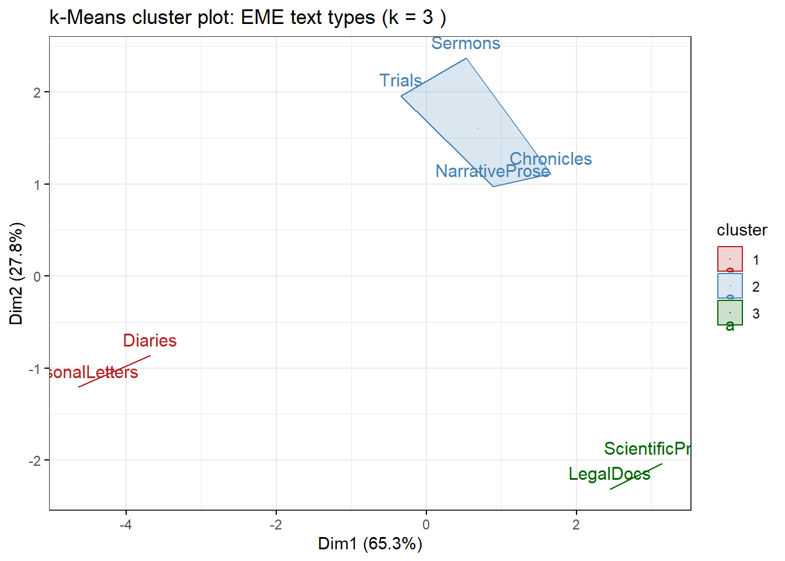
Code
sil_km_eme <- silhouette(km_eme$cluster, eme_dist)
plot(sil_km_eme,
col = c("firebrick","steelblue","darkgreen")[1:opt_k_eme],
main = paste("k-Means silhouette: EME text types (k =", opt_k_eme, ")"))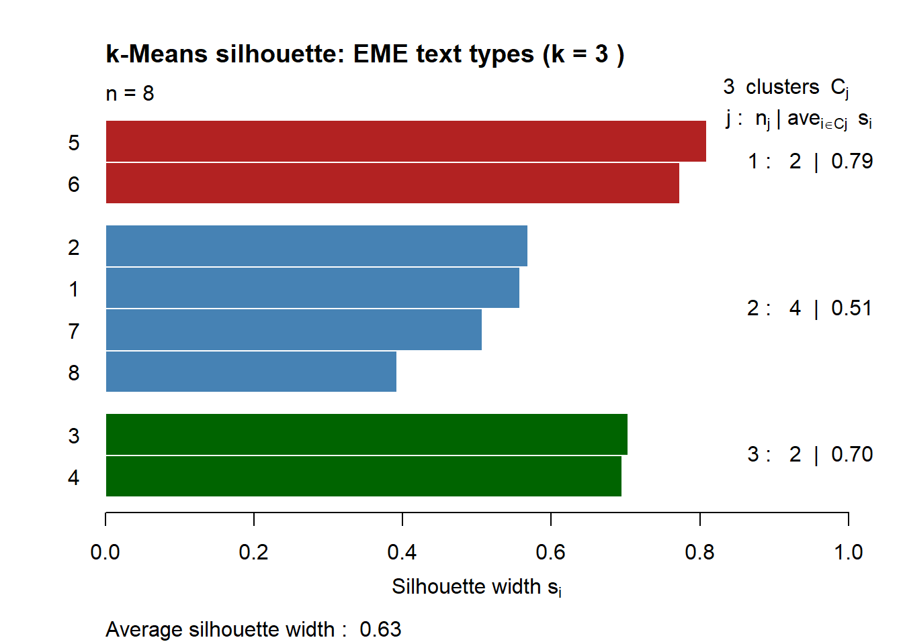
Code
cat("Average silhouette width (k-means, EME):",
round(mean(sil_km_eme[,3]), 3), "\n")Average silhouette width (k-means, EME): 0.626 Comparing Hierarchical and k-Means Solutions
Code
hc_groups_eng <- cutree(cd, k = opt_k_eng)
comparison_eng <- data.frame(
Object = names(hc_groups_eng),
Hierarchical = paste0("H", hc_groups_eng),
kMeans = paste0("K", km_eng$cluster)
) |>
dplyr::mutate(
Agreement = ifelse(
as.integer(factor(Hierarchical)) == as.integer(factor(kMeans)),
"✓ Agree", "✗ Differ"
)
)
comparison_eng |>
flextable() |>
flextable::set_table_properties(width = .6, layout = "autofit") |>
flextable::theme_zebra() |>
flextable::color(i = ~ Agreement == "✓ Agree", color = "steelblue") |>
flextable::color(i = ~ Agreement == "✗ Differ", color = "firebrick") |>
flextable::set_caption("Hierarchical vs. k-Means assignments: English varieties")Object | Hierarchical | kMeans | Agreement |
|---|---|---|---|
IrishEnglish | H1 | K2 | ✗ Differ |
ScottishEnglish | H1 | K2 | ✗ Differ |
BritishEnglish | H2 | K4 | ✗ Differ |
AustralianEnglish | H2 | K4 | ✗ Differ |
NewZealandEnglish | H2 | K4 | ✗ Differ |
AmericanEnglish | H3 | K3 | ✓ Agree |
CanadianEnglish | H3 | K3 | ✓ Agree |
JamaicanEnglish | H4 | K1 | ✗ Differ |
PhilippineEnglish | H4 | K1 | ✗ Differ |
IndianEnglish | H4 | K1 | ✗ Differ |
Code
hc_groups_eme <- cutree(cd_eme, k = opt_k_eme)
comparison_eme <- data.frame(
Object = names(hc_groups_eme),
Hierarchical = paste0("H", hc_groups_eme),
kMeans = paste0("K", km_eme$cluster)
) |>
dplyr::mutate(
Agreement = ifelse(
as.integer(factor(Hierarchical)) == as.integer(factor(kMeans)),
"✓ Agree", "✗ Differ"
)
)
comparison_eme |>
flextable() |>
flextable::set_table_properties(width = .6, layout = "autofit") |>
flextable::theme_zebra() |>
flextable::color(i = ~ Agreement == "✓ Agree", color = "steelblue") |>
flextable::color(i = ~ Agreement == "✗ Differ", color = "firebrick") |>
flextable::set_caption("Hierarchical vs. k-Means assignments: EME text types")Object | Hierarchical | kMeans | Agreement |
|---|---|---|---|
Sermons | H1 | K2 | ✗ Differ |
Trials | H1 | K2 | ✗ Differ |
ScientificProse | H2 | K3 | ✗ Differ |
LegalDocs | H2 | K3 | ✗ Differ |
PersonalLetters | H3 | K1 | ✗ Differ |
Diaries | H3 | K1 | ✗ Differ |
NarrativeProse | H1 | K2 | ✗ Differ |
Chronicles | H1 | K2 | ✗ Differ |
When the Two Methods Disagree
Objects assigned differently by hierarchical and k-means clustering are typically borderline cases sitting between clusters in the feature space. Their assignment is less certain than core cluster members and warrants cautious interpretation. Consider reporting: (a) which objects both methods agree on (the stable core of each cluster); (b) which objects differ (the boundary cases); and (c) the average silhouette width of the disagreeing objects — low values confirm they are genuinely ambiguous.
Correspondence Analysis
Section Overview
What you will learn: What correspondence analysis is and when to use it; how to set up a contingency table; how to run and evaluate a CA; how to read a biplot step by step; how to interpret dimensions, contributions, and the scree plot; and how to apply CA to two linguistic datasets — amplifier/adjective co-occurrences and L2 learner error types
What Is Correspondence Analysis?
Correspondence analysis (CA) is a multivariate technique for the association structure of a contingency table — a cross-tabulation of two categorical variables. It produces a low-dimensional representation of both row and column categories so that categories that co-occur above chance are placed close together.
CA is closely related to PCA, but operates on count data rather than continuous measurements. It is particularly well-suited to:
- Corpus linguistics: which amplifiers co-occur with which adjectives?
- Sociolinguistics: which discourse features are associated with which speaker groups?
- SLA research: which error types characterise which L2 learner groups?
- Register studies: which grammatical constructions are characteristic of which registers?
- Historical linguistics: which sound changes cluster in which language varieties?
Feature | Correspondence Analysis | Hierarchical / k-Means |
|---|---|---|
Input data | Contingency table (counts/frequencies) | Distance matrix (any data type) |
Output | Row and column coordinates in shared space | Dendrogram or flat partition |
Visualisation | Biplot (rows and columns together) | Dendrogram, heat map, cluster plot |
Tests association? | Yes — chi-squared test first | No — exploratory only |
Number of dimensions | Typically 2–3 for interpretation | Full hierarchy (hierarchical) / flat (k-means) |
Best linguistic use | Two-way associations between categorical variables | Finding groups of similar objects |
Dataset 1: Amplifier–Adjective Co-Occurrences
Loading and Simplifying the Data
Code
vsmdata <- base::readRDS(here::here("tutorials/clust/data/vsd.rda"), "rb")
cat("Rows:", nrow(vsmdata), "| Amplifiers:", n_distinct(vsmdata$Amplifier),
"| Adjectives:", n_distinct(vsmdata$Adjective), "\n")Rows: 5000 | Amplifiers: 25 | Adjectives: 130 Code
vsmdata_simp <- vsmdata |>
dplyr::filter(Amplifier != 0,
!Adjective %in% c("many","much")) |>
dplyr::group_by(Amplifier) |>
dplyr::mutate(AmpFreq = dplyr::n()) |>
dplyr::ungroup() |>
dplyr::mutate(Amplifier = ifelse(AmpFreq > 20, Amplifier, "other")) |>
dplyr::group_by(Adjective) |>
dplyr::mutate(AdjFreq = dplyr::n()) |>
dplyr::ungroup() |>
dplyr::filter(AdjFreq > 10, Adjective != "other") |>
dplyr::select(-AmpFreq, -AdjFreq)
cat("Retained rows:", nrow(vsmdata_simp),
"| Amplifiers:", n_distinct(vsmdata_simp$Amplifier),
"| Adjectives:", n_distinct(vsmdata_simp$Adjective), "\n")Retained rows: 257 | Amplifiers: 5 | Adjectives: 11 Contingency Table and Balloon Plot
Code
dt <- as.matrix(table(vsmdata_simp$Adjective, vsmdata_simp$Amplifier))
# Display table
as.data.frame.matrix(dt) |>
tibble::rownames_to_column("Adjective") |>
flextable() |>
flextable::set_table_properties(width = .75, layout = "autofit") |>
flextable::theme_zebra() |> flextable::fontsize(size = 10) |>
flextable::set_caption("Adjective × amplifier contingency table")Adjective | other | pretty | really | so | very |
|---|---|---|---|---|---|
bad | 2 | 1 | 8 | 3 | 2 |
big | 0 | 3 | 4 | 2 | 4 |
clear | 2 | 1 | 2 | 2 | 4 |
different | 8 | 0 | 2 | 0 | 3 |
difficult | 4 | 1 | 2 | 1 | 18 |
good | 3 | 9 | 25 | 3 | 36 |
hard | 0 | 1 | 5 | 0 | 11 |
important | 4 | 0 | 1 | 1 | 19 |
interesting | 0 | 0 | 3 | 1 | 13 |
nice | 0 | 0 | 16 | 1 | 12 |
strong | 0 | 0 | 2 | 1 | 11 |
Code
gplots::balloonplot(t(dt), main = "Amplifier × adjective co-occurrences",
xlab = "Adjective", ylab = "Amplifier",
label = FALSE, show.margins = TRUE)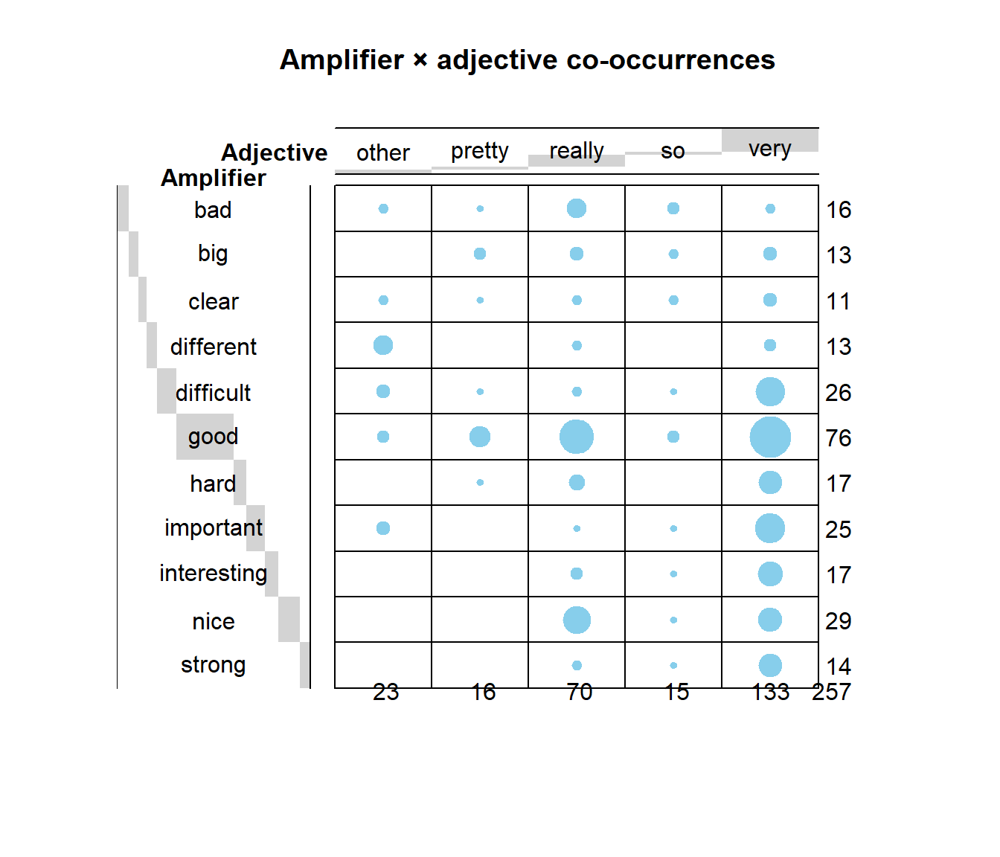
Chi-Squared Test
Code
chisq_amp <- chisq.test(dt)
cat(sprintf("Chi-squared(df=%d) = %.2f, p %s\n",
chisq_amp$parameter, chisq_amp$statistic,
ifelse(chisq_amp$p.value < .001, "< .001",
paste("=", round(chisq_amp$p.value, 3)))))Chi-squared(df=40) = 124.40, p < .001Running and Evaluating the CA
Code
res_ca <- FactoMineR::CA(dt, graph = FALSE)
# Eigenvalues and explained variance
eig_amp <- get_eigenvalue(res_ca)
round(eig_amp, 3) |> as.data.frame() |>
tibble::rownames_to_column("Dimension") |>
flextable() |>
flextable::set_table_properties(width = .55, layout = "autofit") |>
flextable::theme_zebra() |>
flextable::set_caption("CA eigenvalues: amplifier data")Dimension | eigenvalue | variance.percent | cumulative.variance.percent |
|---|---|---|---|
Dim.1 | 0.241 | 49.868 | 49.87 |
Dim.2 | 0.147 | 30.345 | 80.21 |
Dim.3 | 0.061 | 12.654 | 92.87 |
Dim.4 | 0.035 | 7.133 | 100.00 |
Code
factoextra::fviz_screeplot(res_ca, addlabels = TRUE,
main = "Scree plot: amplifier CA") +
theme_bw()
How Many Dimensions to Interpret?
Retain and interpret dimensions that together explain ≥ 70–80% of the total inertia. The scree plot helps: dimensions to the left of the “elbow” contain most of the systematic association structure. For a 2D biplot, Dimensions 1 and 2 are used regardless — but the interpretation should acknowledge what proportion of inertia they represent.
The Biplot
Code
factoextra::fviz_ca_biplot(
res_ca, repel = TRUE,
col.row = "steelblue", col.col = "firebrick",
ggtheme = theme_bw()
) +
labs(title = "CA biplot: amplifiers and adjectives",
subtitle = "Blue = adjectives | Red = amplifiers",
caption = paste0("Dim 1: ", round(eig_amp[1,2], 1),
"% | Dim 2: ", round(eig_amp[2,2], 1), "% of inertia"))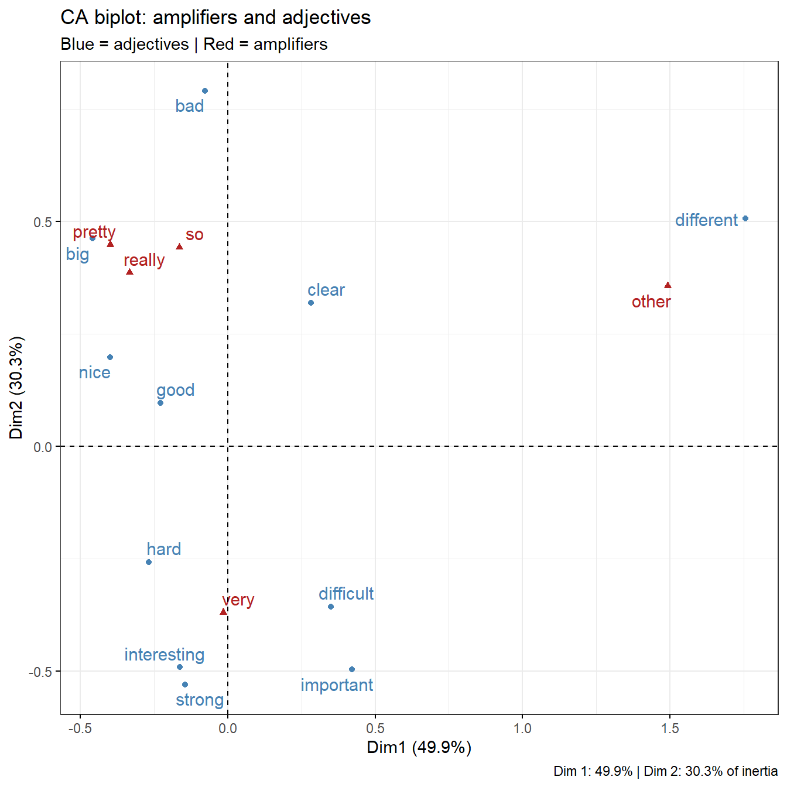
Reading a CA Biplot: Five Steps
- Distance from origin: Objects near the origin have profiles close to the average — not strongly associated with any specific category. Objects far from the origin are distinctive.
- Row–column proximity: A row category (adjective) near a column category (amplifier) co-occurs more than expected by chance. If really and nice are close, really is the preferred amplifier for nice.
- Dimension 1 (horizontal axis): The dominant association gradient. Objects at opposite ends have the most contrasting profiles — read this as a continuum between two usage poles.
- Dimension 2 (vertical axis): The secondary gradient, orthogonal to Dimension 1. Some objects are only differentiated on this dimension.
- Clusters of categories: Groups of adjectives and amplifiers appearing together share similar co-occurrence profiles.
Row and Column Contributions
Code
# Which adjectives contribute most to Dimension 1?
as.data.frame(res_ca$row$contrib) |>
tibble::rownames_to_column("Adjective") |>
dplyr::select(Adjective, `Dim 1`, `Dim 2`) |>
dplyr::mutate(across(where(is.numeric), \(x) round(x, 2))) |>
dplyr::arrange(desc(`Dim 1`)) |>
head(8) |>
flextable() |>
flextable::set_table_properties(width = .5, layout = "autofit") |>
flextable::theme_zebra() |>
flextable::set_caption("Top 8 adjective contributions to CA dimensions (%)")Adjective | Dim 1 | Dim 2 |
|---|---|---|
different | 64.70 | 8.84 |
nice | 7.48 | 3.01 |
important | 7.16 | 16.35 |
good | 6.40 | 1.88 |
difficult | 5.10 | 8.77 |
big | 4.41 | 7.36 |
hard | 1.97 | 3.00 |
clear | 1.41 | 2.97 |
Code
# Amplifier contributions
as.data.frame(res_ca$col$contrib) |>
tibble::rownames_to_column("Amplifier") |>
dplyr::mutate(across(where(is.numeric), \(x) round(x, 2))) |>
flextable() |>
flextable::set_table_properties(width = .55, layout = "autofit") |>
flextable::theme_zebra() |>
flextable::set_caption("Amplifier contributions to CA dimensions (%)")Amplifier | Dim 1 | Dim 2 | Dim 3 | Dim 4 |
|---|---|---|---|---|
other | 82.55 | 7.78 | 0.07 | 0.65 |
pretty | 4.13 | 8.54 | 47.77 | 33.33 |
really | 12.61 | 27.76 | 32.03 | 0.36 |
so | 0.65 | 7.82 | 20.03 | 65.66 |
very | 0.05 | 48.10 | 0.10 | 0.00 |
Code
# Colour rows and columns by contribution
factoextra::fviz_ca_row(res_ca, axes = c(1,2), repel = TRUE,
col.row = "contrib",
gradient.cols = c("steelblue","white","firebrick"),
ggtheme = theme_bw()) +
labs(title = "Adjective coordinates: coloured by Dim 1+2 contribution")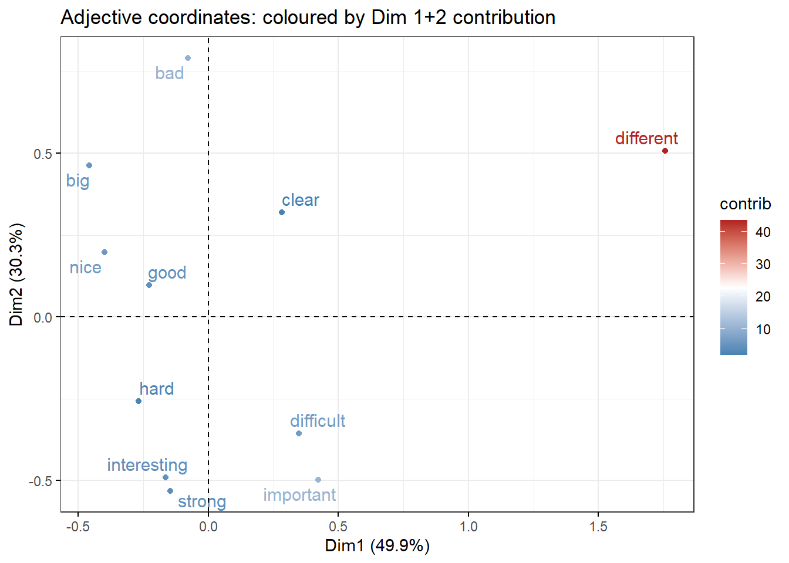
Code
factoextra::fviz_ca_col(res_ca, axes = c(1,2), repel = TRUE,
col.col = "contrib",
gradient.cols = c("steelblue","white","firebrick"),
ggtheme = theme_bw()) +
labs(title = "Amplifier coordinates: coloured by Dim 1+2 contribution")
Dataset 2: L2 Learner Error Types
For the second CA example, we cross-tabulate L2 learner first language (L1) against error type in a learner corpus. This illustrates how CA reveals which L1 backgrounds are associated with which grammatical error patterns.
Code
set.seed(2026)
# 5 L1 groups × 7 error types (simulated counts per 10,000 words)
l2_errors <- matrix(
c(45, 12, 8, 32, 18, 5, 22, # Mandarin L1
38, 9, 15, 28, 22, 8, 18, # Japanese L1
18, 32, 28, 9, 35, 24, 12, # Arabic L1
15, 35, 30, 8, 38, 28, 10, # Persian L1
22, 18, 12, 18, 14, 10, 28), # Spanish L1
nrow = 5, byrow = TRUE,
dimnames = list(
L1 = c("Mandarin","Japanese","Arabic","Persian","Spanish"),
ErrorType = c("ArticleOmit","ArticleWrong","PrepError",
"AspectError","TenseError","SVAgreement","LexicalError")
)
)
as.data.frame(l2_errors) |>
tibble::rownames_to_column("L1") |>
flextable() |>
flextable::set_table_properties(width = .85, layout = "autofit") |>
flextable::theme_zebra() |> flextable::fontsize(size = 10) |>
flextable::set_caption("L2 learner error types by L1 background (counts per 10,000 words)")L1 | ArticleOmit | ArticleWrong | PrepError | AspectError | TenseError | SVAgreement | LexicalError |
|---|---|---|---|---|---|---|---|
Mandarin | 45 | 12 | 8 | 32 | 18 | 5 | 22 |
Japanese | 38 | 9 | 15 | 28 | 22 | 8 | 18 |
Arabic | 18 | 32 | 28 | 9 | 35 | 24 | 12 |
Persian | 15 | 35 | 30 | 8 | 38 | 28 | 10 |
Spanish | 22 | 18 | 12 | 18 | 14 | 10 | 28 |
Code
chisq_l2 <- chisq.test(l2_errors)
cat(sprintf("Chi-squared(df=%d) = %.2f, p %s\n",
chisq_l2$parameter, chisq_l2$statistic,
ifelse(chisq_l2$p.value < .001, "< .001",
paste("=", round(chisq_l2$p.value, 3)))))Chi-squared(df=24) = 143.18, p < .001Code
res_ca_l2 <- FactoMineR::CA(l2_errors, graph = FALSE)
eig_l2 <- get_eigenvalue(res_ca_l2)
cat(sprintf("Dim 1: %.1f%% | Dim 2: %.1f%% | Total (2D): %.1f%%\n",
eig_l2[1,2], eig_l2[2,2], sum(eig_l2[1:2, 2])))Dim 1: 89.2% | Dim 2: 9.8% | Total (2D): 99.0%Code
factoextra::fviz_ca_biplot(
res_ca_l2, repel = TRUE,
col.row = "firebrick", col.col = "steelblue",
ggtheme = theme_bw()
) +
labs(title = "CA biplot: L2 learner errors by L1 background",
subtitle = "Red = L1 groups | Blue = error types",
caption = paste0("Dim 1: ", round(eig_l2[1,2], 1),
"% | Dim 2: ", round(eig_l2[2,2], 1), "% of inertia"))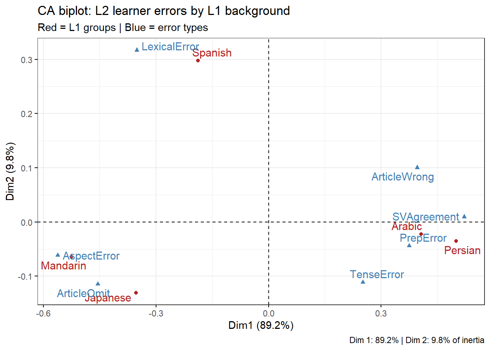
The biplot reveals that Mandarin and Japanese learners cluster together and are characterised by article omissions and aspect errors — consistent with the absence of articles and grammatical aspect in these L1s. Arabic and Persian learners cluster separately, characterised by preposition errors and article confusion — reflecting different L1 transfer patterns. Spanish learners are positioned between the two groups, with a distinctive lexical error profile.
Choosing Between Methods
Section Overview
What you will learn: A comprehensive decision guide for choosing between hierarchical clustering, k-means, and CA based on your data type and research question; a full comparison table; and a recommended step-by-step analytical workflow
Decision Guide
Dimension | Hierarchical | k-Means | Correspondence |
|---|---|---|---|
Input data type | Numeric, binary, mixed (Gower) | Continuous numeric only | Contingency table (counts) |
Requires specifying k? | No — decided post-hoc | Yes — before fitting | Not applicable |
Output | Dendrogram + membership | Flat partition + centroids | Row + column coordinates |
Visualisation options | Dendrogram, heat map, ape phylo, fviz_dend | fviz_cluster, silhouette plot | Biplot, scree plot, contribution plots |
Handles mixed data types? | Yes (with Gower distance) | No | No |
Scalability (N objects) | Moderate (< ~1,000) | High (millions) | Moderate |
Bootstrap validation? | Yes (pvclust) | No (use bootstrap externally) | No |
Detects non-spherical clusters? | Yes (single linkage) | No — spherical only | Not applicable |
Provides significance test? | No | No | Yes (chi-squared) |
Shows direction of association? | No (use mean diff plots) | No (use centroid plots) | Yes — in biplot |
Best linguistic use case | Dialect/language typology; EME register; exploratory analysis | Large-scale text clustering; speaker segmentation; confirmation of HCA | Amplifier/collocation patterns; L2 error profiles; register × feature associations |
Recommended Analytical Workflow
Step 1 — Assess clusterability (Hopkins statistic) Before any clustering, confirm the data contains genuine structure. If Hopkins ≈ 0.5, the data is too random for meaningful clustering.
Step 2 — Choose the distance measure Match the measure to your data type: Euclidean/Manhattan for scaled numeric; binary (Jaccard) for presence/absence; Gower for mixed types.
Step 3 — Hierarchical clustering (exploratory) Fit with ward.D2 linkage. Compare linkage methods with cophenetic correlation. Choose k using silhouette + elbow + gap statistic. Validate with pvclust (nboot = 1000). Visualise with dendrogram and heat map.
Step 4 — k-Means (confirmation / large N) Fit with nstart = 25. Compare to hierarchical solution. Flag borderline objects where the two methods disagree.
Step 5 — Identify distinctive features Compute mean feature differences per cluster, visualise as barplot. For nominal data, run Fisher’s exact tests. Report which features most strongly define each cluster.
Step 6 — Correspondence analysis (if you have a contingency table) Run chi-squared first. Interpret eigenvalues and scree plot. Produce biplot with row/column contributions. Interpret each dimension as an association gradient.
Citation and Session Info
Schweinberger, Martin. 2026. Cluster and Correspondence Analysis in R. Brisbane: The Language Technology and Data Analysis Laboratory (LADAL). url: https://ladal.edu.au/tutorials/clust/clust.html (Version 2026.02.24).
@manual{schweinberger2026clust,
author = {Schweinberger, Martin},
title = {Cluster and Correspondence Analysis in R},
note = {https://ladal.edu.au/tutorials/clust/clust.html},
year = {2026},
organization = {The Language Technology and Data Analysis Laboratory (LADAL)},
address = {Brisbane},
edition = {2026.02.24}
}Code
sessionInfo()R version 4.4.2 (2024-10-31 ucrt)
Platform: x86_64-w64-mingw32/x64
Running under: Windows 11 x64 (build 26200)
Matrix products: default
locale:
[1] LC_COLLATE=English_United States.utf8
[2] LC_CTYPE=English_United States.utf8
[3] LC_MONETARY=English_United States.utf8
[4] LC_NUMERIC=C
[5] LC_TIME=English_United States.utf8
time zone: Australia/Brisbane
tzcode source: internal
attached base packages:
[1] grid stats graphics grDevices datasets utils methods
[8] base
other attached packages:
[1] checkdown_0.0.13 lubridate_1.9.4 forcats_1.0.0 stringr_1.5.1
[5] dplyr_1.2.0 purrr_1.0.4 readr_2.1.5 tidyr_1.3.2
[9] tidyverse_2.0.0 FactoMineR_2.11 gplots_3.2.0 tibble_3.2.1
[13] flextable_0.9.11 exact2x2_1.6.9 exactci_1.4-4 testthat_3.2.3
[17] ssanv_1.1 vcd_1.4-13 ape_5.8-1 pvclust_2.2-0
[21] seriation_1.5.7 factoextra_1.0.7 ggplot2_4.0.2 cluster_2.1.6
loaded via a namespace (and not attached):
[1] RColorBrewer_1.1-3 rstudioapi_0.17.1 jsonlite_1.9.0
[4] magrittr_2.0.3 TH.data_1.1-3 estimability_1.5.1
[7] farver_2.1.2 rmarkdown_2.30 ragg_1.3.3
[10] vctrs_0.7.1 askpass_1.2.1 rstatix_0.7.2
[13] htmltools_0.5.9 broom_1.0.7 Formula_1.2-5
[16] KernSmooth_2.23-24 htmlwidgets_1.6.4 plyr_1.8.9
[19] sandwich_3.1-1 emmeans_1.10.7 zoo_1.8-13
[22] uuid_1.2-1 commonmark_2.0.0 lifecycle_1.0.5
[25] iterators_1.0.14 pkgconfig_2.0.3 Matrix_1.7-2
[28] R6_2.6.1 fastmap_1.2.0 digest_0.6.39
[31] colorspace_2.1-1 patchwork_1.3.0 rprojroot_2.1.1
[34] textshaping_1.0.0 ggpubr_0.6.0 labeling_0.4.3
[37] timechange_0.3.0 abind_1.4-8 compiler_4.4.2
[40] here_1.0.2 fontquiver_0.2.1 withr_3.0.2
[43] S7_0.2.1 backports_1.5.0 carData_3.0-5
[46] viridis_0.6.5 dendextend_1.19.0 ggsignif_0.6.4
[49] MASS_7.3-61 openssl_2.3.2 scatterplot3d_0.3-44
[52] gtools_3.9.5 caTools_1.18.3 flashClust_1.01-2
[55] tools_4.4.2 lmtest_0.9-40 zip_2.3.2
[58] glue_1.8.0 nlme_3.1-166 reshape2_1.4.4
[61] generics_0.1.3 gtable_0.3.6 tzdb_0.4.0
[64] ca_0.71.1 data.table_1.17.0 hms_1.1.3
[67] xml2_1.3.6 car_3.1-3 ggrepel_0.9.6
[70] foreach_1.5.2 pillar_1.10.1 markdown_2.0
[73] splines_4.4.2 lattice_0.22-6 klippy_0.0.0.9500
[76] renv_1.1.7 survival_3.7-0 tidyselect_1.2.1
[79] registry_0.5-1 fontLiberation_0.1.0 knitr_1.51
[82] fontBitstreamVera_0.1.1 gridExtra_2.3 litedown_0.9
[85] xfun_0.56 brio_1.1.5 DT_0.33
[88] stringi_1.8.4 yaml_2.3.10 evaluate_1.0.3
[91] codetools_0.2-20 officer_0.7.3 gdtools_0.5.0
[94] multcompView_0.1-10 cli_3.6.4 xtable_1.8-4
[97] systemfonts_1.3.1 Rcpp_1.1.1 coda_0.19-4.1
[100] parallel_4.4.2 leaps_3.2 assertthat_0.2.1
[103] bitops_1.0-9 viridisLite_0.4.2 mvtnorm_1.3-3
[106] scales_1.4.0 rlang_1.1.7 TSP_1.2-4
[109] multcomp_1.4-28
AI Transparency Statement
This tutorial was written with the assistance of Claude (claude.ai), a large language model created by Anthropic. Claude was used to substantially expand and restructure a shorter existing LADAL tutorial on cluster and correspondence analysis. All content was reviewed and approved by Martin Schweinberger, who takes full responsibility for its accuracy.
References
Biber, Douglas. 1995. Dimensions of Register Variation: A Cross-Linguistic Comparison. Cambridge University Press.
Blashfield, Roger K, and Mark S Aldenderfer. 1988. “The Methods and Problems of Cluster Analysis.” In Handbook of Multivariate Experimental Psychology, 447–73. Springer. https://doi.org/https://doi.org/10.1007/978-1-4613-0893-5_14.
Kassambara, Alboukadel. 2017. Practical Guide to Cluster Analysis in r: Unsupervised Machine Learning. Vol. 1. Sthda.
Kettenring, Jon R. 2006. “The Practice of Cluster Analysis.” Journal of Classification 23 (1): 3–30. https://doi.org/https://doi.org/10.1007/s00357-006-0002-6.
King, Ronald S. 2015. Cluster Analysis and Data Mining: An Introduction. Stylus Publishing, LLC.
Levshina, Natalia. 2015. How to Do Linguistics with r: Data Exploration and Statistical Analysis. Amsterdam: John Benjamins Publishing Company.
Romesburg, Charles. 2004. Cluster Analysis for Researchers. Lulu Press.